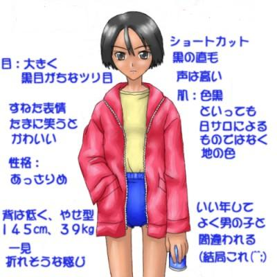

戻る
政史と真琴
−六年間の軌跡−
作：水谷秋夫 画：原田聖也
原田さんに日ごろの感謝をこめて（水谷）
一、
俺、田原政史が真琴に初めて会ったのは小学校二年生の時の二学期初日だった。夏休みが終わり、学校に行くと先生が、「転校生がいる」と、教えてくれた。教室に入ってきたその子は、背は低めでＴシャツに半ズボン姿。首のやや上で切り揃えた髪。よく日焼けした褐色の肌。そして、つり目で黒目がちの大きな瞳がぐりぐり動いていたのが印象的だった。
「佐久間真琴、ちゃんです。みんな、仲良くしてあげてね。机は田原政史君の隣が空いているから、そこがいいかな」
そう言って、先生は俺の机の隣を指した。
「先生、そこは女の席だよ」
誰かが、そう言った。この組では男と女は一列ずつ交互に並んでいた。男の俺の隣席は、当然、女の子の席だ。
佐久間真琴は、顔立ちからは男か女か、どちらともつかなかった。だが、半ズボンを穿いた女はいないだろう、名前もまことだし、これは男の子だろう、というのが教室内のおおかたの反応だった。
その時だった。
不機嫌そうに立っていた転校生が、初めて言葉を発した。
「女で悪かったなっ！」
教室の皆は凍りついた。ジェット機が飛び立つかと思うほどの耳をつんざく高音だった。
二、
俺たちの住んでいる皆瀬町は、Ｍ県の県庁所在地・暁仙市から電車で二十分ほど南にある。もともとは江戸時代の宿場町で、水田に囲まれたのどかな所だ。しかし、最近は暁仙市のベッドタウンとして住宅が増えつつある。工場もいくつかある。真琴の父親も皆瀬町の工場で働いているという。皆瀬町に来た当初、真琴の家族は借家に住んでいたようだ。しかし、しばらくして俺の家の隣の空き地に、家を建てて住み始めた。学校の席も隣で家も近いし、互いの家を行き来して、俺と真琴はなんとなく一緒に遊ぶようになっていった。
小学生の男女関係というのは妙なものだ。低学年の頃は男も女も一緒くただ。何人かの女の子と相撲を取った記憶まである。それが、次第に成長すると男は男同士、女は女同士で固まって遊ぶようになって、互いに疎遠になる。女の子達はいつの間にか「あちら側」に行ってしまうのだ。そして、それっきり「こちら」には戻ってこない。
ところが、真琴はいつまでも「こちら側」だった。女同士より、男たちの中にいることの方が多かった。
家でテレビゲームをするときも、真琴の好みは男友達とほとんどかわらなかった。格闘ゲームやシューティングゲームを真琴は好んでいた。そうやって遊んでいる間、俺は真琴が女だということをすっかり忘れていたような気がする。
一度、別な友達の家に真琴と行き、友達四人ほどで「人生ゲーム」をしたことがある。人生ゲームはすごろく風のボードゲームで、ルーレットを回して出た目の数だけ進む。止まった場所それぞれには、就職した、結婚した、子供が生まれた、事業を興して二万ドル儲けた、火事で一万五千ドル損した、とその時々におきた出来事が記されている。全員ゴールした後で一番金持ちだった奴が勝ちだ。
この人生ゲームでは、最初にまず自分の色の車を選び、ピンをその車に刺さなければならない。男なら青色、女なら桃色のピンだ。それが自分だよ、という印である。結婚したら同じ車に結婚相手のピンを刺す。ゲームをしているのが男なら相手は女だから桃色のピン、女なら青色のピンを刺す。さらに男の子が生まれれば青色のピン、女の子が生まれれば桃色のピンを刺して、車の中に家族が増えていく。
その時、真琴以外はみな男だった。三人とも青色のピンを刺した。そして真琴は、というと、彼女も青色のピンを刺したのだ。
「おい、真琴。お前、女じゃなかったのかよ」
「いいじゃねえかよ。青が好きなんだから」
「まあ、男みてえな奴だからな。真琴は」
男みたいだ、と言われるのは真琴には日常茶飯だった。また、そう言ったために真琴が怒ったことは一度もなかった。
人生ゲームでは、参加者は誰でも「結婚」と書かれた場所で止まり、結婚をしなければならない。それで、いざ結婚、という時になると、真琴は迷ったあげくにどちらの色のピンも取らなかった。
「おい、真琴は女なんだから男と結婚するんじゃねえのか」
「真琴が青のピンなら女同士でするか」
「ははは」
「オレは結婚しない」
そう、真琴は女なのに自分のことを、オレ、と言っていた。ただ、それはあまりに自然な言い方なので、誰も不思議には思わないでいた。
「結婚は誰でもしないといけないんだぞ。ここで」
「お祝い金、やらねえぞ」
「しない。お祝い金なんていらない。オレは女とは結婚できないし、男とするわけない」
真琴は意固地だった。結局、結婚相手の席は空のまま、真琴はゲームの中で生まれてくる子供だけ車に乗せてゲームを続けたのだった。今思えば、男装の麗人で未婚の母という妙な人生である。
「それじゃ、この子供はなんだよ。真琴が生んだんじゃないのかよ」
「川から拾ってきたんだよっ」
その日の人生ゲームで誰が勝ったのかは覚えていない。でも、この妙なやり取りだけは覚えている。真琴が困ったような怒ったような顔をしていたことも。
三、
転校して数ヶ月も経つと、真琴は俺たち男友達にすっかり馴染んでいた。体育の時など真琴が女の集団の中にいると、かえって違和感を感じるくらいだった。その時はよくこう言ったものだ。
「おい、真琴、お前、こっちじゃないのかよ」
そう言われた真琴は舌を出してあっかんべをしたり悪態をついたりするのが常だった。あいつがそうしたときにどんな思いでいたのか、俺は知る由もなかった。
田舎の子供だから、田圃の中を駆け回ることもある。小学三年ぐらいの時だったろうか。夏か秋かも覚えていないが、悪童五人ほどで昼過ぎからずっと畦道を行き来して遊んでいたことがある。その中に真琴もいた。五人の中で女の子はもちろん真琴ただ一人だった。
誰かが持ってきた虫取り網があった。それはたちまち水中網になった。
「お、タガメがかかった」
「タガメって、血、吸わねえか？」
「蛭じゃあるまいし。人の血は吸わねえよ」
「蛭って？」
暁仙市に住んでいた真琴には、田圃の生き物の知識はなかった。
「そこにいるよ」
友達の一人が指し示した稲の根本の水中に、確かに蛭がいた。
「みみずみてえだな」
「じゃ、ちょっと取って、吸わせてやろうか」
「よせよ」
悪ふざけが過ぎる。俺は止めた。
「蛭に血を吸われると、傷口から血が出て止まらなくなるんだ。気をつけろよ」
「おお、政史は真琴にやさしいのぉ」
「からかうなって」
「おい、ざりがに釣りやろうぜ」
言い出したのは高岡という奴だ。
「どうやるんだ？」
真琴が尋ねる。
「こうやって小さめの蛙を紐でしばってよ、ざりがにのいそうなところで水面ぎりぎりに垂らすんだよ」
じっと待っていると、アメリカざりがにが、がば、と水面に現れてそのはさみで蛙をつかんだ。そこをすかさずつり上げる。
「ひゃはははは。面白えだろ」
「お、おい。蛙、腹、破れてるじゃないか」
俺たちには見慣れていた光景だが、真琴は真っ青になった。
「はは。女にはこんなのは残酷か？」
「違うよ」
真琴は女と言われると面白いぐらいに反発する。
「だいたい、オレは蛙だって見たことないんだから。こんな遊びはしたことない」
「ああ、暁仙の街育ちだったっけ」
そこで高岡は堀にいた別な蛙を掴まえるとひょい、と真琴の顔に向かって放り投げた。
「ぎゃっ」
真琴が顔をかばった。その手に蛙が当たって落ちる。
「持ってみろよ」
「ああ。なんだ、これ。蛙って皮膚がぬめっとしてて、体がふにゃふにゃしてるな」
「そんなに、きつく持ってると、すぐ死んじまうぞ」
俺は自分の経験からそう言った。蛙は両生類だから、体の表面が乾くと死ぬ。真琴はそれを聞いて、すぐに蛙を堀に戻した。
俺たちはそれからざりがに釣りに興じた。釣るのは次々と交代したが、真琴は見ているだけだった。
「真琴は、やらないのか」
「あ、いや。いい」
「こういうのは嫌いか」
「そうじゃない。そうじゃなくって……、オレ、帰る」
その時、真琴の顔は少し紅潮していた。
「なんだよ、突然」
「いや、ちょっと」
理由も言わないで真琴は、てててて、と小走りに帰っていった。
「変なの。よっぽど蛙が嫌いなのかな」
しばらくして、ざりがに釣りにようやく飽きた高岡が言った。
「ああー、小便したくなったな」
そう言えばもう夕方近くになっていた。昼日中から何時間も田圃の中で遊んでいたのだ。
「俺も」
「あ、俺もオシッコする」
俺たち男四人は堀の前で並んで立ち小便した。その時に、高岡がこんなことを言った。
「あれ？ ひょっとして真琴も小便したかったんじゃないか？」
俺たちは顔を見合わせた。
「そうか。女は立ち小便できないんだっけ」
四、
ある日、学校の休み時間に、ふと、真琴が呟いた。
「政史さあ。お前、鬼って見たことあるか？」
「あるわけないだろ」
「普通、そうだよな」
真琴は黙り込んだ。会話はそれきりで、唐突に終わった。
五、
小学校四年の時、俺と真琴は地元の皆瀬少年サッカークラブに入った。ちょうどワールドカップイタリア大会が開かれた年で、二人とも、サッカーにはまってしまったのだ。俺たちは顔を合わせればマテウスが、マラドーナがと言い合った。そして、真琴は日本代表を目指す、と言った。
「まず、代表の前に日本リーグの選手にならないとな」
当時、Ｊリーグはまだなかった。
「真琴、お前、女なんだから日本リーグじゃねえだろ」
「なんでだよ。まず日本リーグに入らなきゃ、日本男子代表になれねえじゃねえか」
「そんなこと言ったって、お前は日本男子代表にはなれねえよ。女子なんだから」
「女だからってことがあるか。オレが日本一の選手になったら、女だろうが嫌でも男子代表に呼ぶ気になるって」
わけのわからない理屈だった。真琴も馬鹿ではないし、無茶苦茶なことを言っているのは本人も分かっているはずだが、真琴は日本リーグに入って、「男子」の日本代表に入ってワールドカップに出ると言って聞かなかった。俺は呆れて、議論をするのはやめにした。
もっとも１９９０年に、日本代表がワールドカップに出場するなどと真面目に考えている奴は、佐久間真琴と三浦和良を除けば、世の中にほとんどいなかったと思う。カズがブラジルから帰国し、日本をワールドカップに出場させるために帰ってきた、と言ったのがこの１９９０年だ。
皆瀬少年サッカークラブには二十人ほどの小学生が参加していた。女は真琴だけだった。入ると、クラブの監督に、
「田原は背が高いから、まずディフェンダーに入れ。佐久間は背が低いからとりあえずフォワードだ」
と、分けられた。適性を見て、適宜ポジションは移すと言っていたが、いい加減なものだった。
監督は皆瀬町の片桐酒店という店の跡取りだった。片桐監督は真琴が女性だということにはまるで頓着しなかった。聞くと、去年まで女子の六年生が二人いたという。
「色気づくまでは、男も女も変わらん」
それだけだった。
真琴は夢中でサッカーに取り組んだ。そして、たちまち上達した。放課後も暇さえあればボールを蹴っていた。もともと肌は地黒だったが、四六時中太陽の下で走り回っているので、真琴の肌は真っ黒になった。高岡など、口の悪い友人は真琴を、「黒人少年」と呼んでいた。
俺がディフェンダーで真琴がフォワードだから、チーム内で紅白戦をするときに別の組に分けられると、俺と真琴はしばしば一対一で対決することになる。真琴は球捌きがうまくて、すばしっこかった。時々、球を前に蹴り出すと見せて蹴らずにボールをまたぎ、後ろに残した足で横に蹴る、といったフェイントをする。来るぞ、とわかっていても俺はよくこれに引っ掛かった。
そして、俺を抜いた後にシュートを決めると、ニコリと笑って俺のほうを振り向くのだ。真琴は普段は世間を斜めに見ているような拗ねた表情をしていることが多くて、滅多に笑わなかった。でも、たまに笑うと大きなつり目が細くなって、本当にいい顔というか、なんというか、可愛かった。言えば怒り出すから言わなかったが、その時だけは「女の子」に見えた。奴の笑顔を見ると、俺は抜かれたことを悔しがる前に苦笑するしかなかった。
少年サッカークラブの練習は日曜日の午前中に毎週、小学校の校庭で行われた。サッカーを始めて数ヶ月後には、真琴はクラブのレギュラーになっていた。俺がレギュラーになったのは六年生になってからだ。同時にサッカーを始めたのに真琴のほうが先に上達していくのは、悔しい思いが無いと言えば嘘になる。しかし、真琴のプレーを実際に見ている時はそんな感情よりも、その俊敏な動きに感嘆することのほうが多かった。
フィールドプレーばかりでなく、真琴はセットプレーも巧みだった。真琴が、ゴールポストのほとんど真横の右サイドから、フリーキックをしたことがある。ファーポストの味方に合わせて蹴ったと見えたボールは空中で失速し、右に曲がりながら落ちてニアポスト近くのゴールに吸い込まれた。ディフェンダーもキーパーも反応できなかった。
試合が終わってから、俺はどう蹴ったのか、と真琴に聞いた。真琴は得々としてここをこう蹴れば、こう曲がる、と何十分も実演解説をして見せた。
あれは、まだ俺がレギュラーではなく、ベンチで試合を見ていた頃だから、小学校五年の秋。隣町のサッカークラブを迎えて、校庭で試合をしたときのことだ。真琴は試合開始からフィールド内を縦横無尽に駆け回っていた。そして前半にドリブルで中央突破して先制ゴールを決めた。ベンチの方を見て、真琴は練習で決めたときよりも嬉しそうに笑っていた。
事件が起きたのは後半が始まってまもなくのことだ。ベンチからは遠くてよく見えなかったのだが、ペナルティエリアの少し手前で、真琴が相手ディフェンダーの裏を取った、と見えた瞬間に足を引っかけられて倒された。倒した方の相手が何か言った。すると真琴は起きあがるが速いか、引っかけた相手に猛然と突っかかっていったのだ。あっという間に取っ組み合いの喧嘩が始まった。審判や監督といった大人達が割って入り、二・三発殴り合っただけで二人は引き離された。
両者退場となった。片岡監督に連れられて真琴はベンチに戻ってきた。
「おい、佐久間。そんなに興奮していたら試合が続かん。今日は帰れ。おい、田原」
「はい」
「お前、佐久間と家が近かったな。試合の途中で悪いが、家まで送ってやってくれ」
片桐監督は普段はあまり余計なことを言わないが、こんな時には威圧感がある。俺と真琴は試合途中で学校を後にした。
真琴は校舎を背にして歩き出してからも、しばらく下を向いて口を開かなかった。背の低い真琴は下を向くと表情がわからない。下から覗き込むと顔が歪んでいる。悔しさを押し殺しているのがわかった。学校から、俺や真琴の家までは十五分ぐらいかかる。道のなかば頃になって真琴はようやく口を開いた。
「……あのやろう」
「足を引っかけた奴か」
「ああ」
また、沈黙。五分ぐらい歩いて、声を出した。
「あいつ……」
「なんか、言われたのか」
「バックチャージのあと、すっころんでいるオレに向かって、女のくせにサッカーなんかするな、女は家でままごとでもしていればいいんだって、言いやがって」
俺はようやく合点がいった。女のくせに、という言葉は真琴には禁句だ。たいがいキレて喧嘩になる。
もっとも、真琴に背後からタックルを食らわせた奴の気持ちもわからないではない。そのディフェンダーは試合前から、皆瀬サッカークラブのフォワードはまだ小学五年生の女だ、と聞いて舐めてかかっていたのだろう。しかし、前半に抜かれて得点され、警戒していた後半にもあっさり抜かれた。女に負ければ自分は女以下だ。それで思わず腹を立て、バックチャージをしてしまったのだろう。
「ちくしょう。なんで、女だってだけで、馬鹿にされなきゃいけないんだ」
「そうだな」
とりあえず、ありきたりの生返事をしたが、俺は別なことを考えていた。真琴に対して何度も疑問に思ったことだ。
「あのさ、真琴」
「なんだよ」
「お前、女のくせに、って言われると、なんでそんなに、腹、立てるんだ？」
「けっ。男のお前にわかるかよ」
「わかんねえな。だって女なのはしょうがねえじゃん。生まれてからずっと、女なんだろ？ 今さら腹、立てなくたってさ」
真琴が立ち止まった。ちょうどそこが真琴の家の前だった。
「生まれてからじゃねえよ」
「え？」
真琴が何を言ったのか、一瞬、理解できなかった。
「オレ、こっちに引っ越しする直前まで、男だったんだ」
七、
俺はそのまま、真琴の家に上がり込んだ。真琴の父はゴルフ、母は踊りの練習とかで、ちょうど誰もいなかった。真琴には兄弟がいない。弟と妹が一人ずついる俺と違って、一人っ子だ。
真琴の部屋は二階だ。すでに俺は何度も遊びに来ている。勝手知ったる他人の家だ。
「政史、オレたち、友達だよな」
「ああ、親友だ」
その言葉に嘘はない。両親と兄弟を除けば、俺は真琴といる時間が一番長い。
「秘密は守れるか」
「もちろん」
「じゃあ、証拠、見せてやるよ。オレの宝物だ」
そう言って真琴は机の奥から写真を取り出した。真夏の写真だ。直径一メートル強のビニールプールで二人の子供が行水をしている。二人は裸で立ったままカメラの方を向いて笑っていた。左の子は女の子だ。右の子は、とよく見ると局部に突起物が写っていた。
「右の方がオレだよ。ちんちんがあるだろ。一緒に写ってるのは近所の同い年の子供だ」
確かに、右の子は真琴だった。三歳頃だけに子供子供した顔だが、大きな黒目がちのつり目は今とまったく変わらない。
「それがどうして」
「鬼を見たんだ。それからだ」
鬼、と言われてもなんのことだかわからない。
「鬼って、桃太郎とか、金太郎とかに出てくる、あれか？」
「ああ。他に一メートルくらいのナメクジの化物」
ふと、俺は真琴の部屋を見渡した。何度も遊びに来た部屋だ。本棚、箪笥に机。布団がベッドになったぐらいで、俺の部屋とあまり変わらない。そうした現代のごく当たり前の子供部屋で、鬼の話などをされてもどう信じろというのだ。
「信じてないな」
「いきなり鬼とか、でかいナメクジとか言われてもな」
「まあ、そうだろ。父さんも母さんも未だに信じてない」
「詳しく話してくれ。信じるかどうかはその後だ」
真琴は小学校二年の夏休みに皆瀬町に引っ越す以前、暁仙市南西部にある住宅地のアパートに住んでいた。
その頃、真琴は「真人」という名前だったという。字面からして男の子だったわけだ。背は低めだが外遊びが好きな活発な少年だったそうだ。
その当時、真人のアパートの近くに、古く寂れた神社があった。鳥居こそ形を保っているが、社殿は崩れそうになっていた。神主もいないし、誰も訪れずに荒れ放題になっていた。本来の名前もよくわからず、子供らは化け物神社と呼んでいた。住宅地のそばの小高い山の上の鬱蒼とした森の中に建つその神社は、大人や女の子たちは気味が悪いと言って近寄らなかったが、いたずら盛りの男の子たちには格好の遊び場だったようだ。子供らは探検と称して社殿の外や中を歩き回り、肝試しを兼ねた鬼ごっこ、かくれんぼを楽しんでいた。
その日は、夏休みのさなかの暑い一日だった。昼過ぎから真人はその神社で友達と遊んでいた。神社の鳥居と社殿の間には平たい丸石が敷かれており、彼らはメンコかおはじきのように、その石をぶつけ合い、陣地の中から出したり入れたりという遊びに高じていた。やがて、夕刻になり、友達は一人去り二人去りしていった。しかし、真人はまだその神社にいた。平たい石のどこに別の石をぶつければ、どう飛ぶのか、調べるのに夢中になっていたからだ。
その話を聞いたとき、真琴が、「ボールをこう蹴ればこう飛ぶ」という話を何十分も俺にした時を思い出して、少し可笑しかった。小さいときからそういう物の衝突とか反発のことを考えるのが好きだったのだ。
真人が一人で神社にいるうちに日が落ちてきた。その時、彼は「陣外し」という遊びについて考え込んでいた。これは二組に分かれて争うゲームだ。まず、何メートルか離れた二本の平行線を引く。その線の外側がそれぞれのチームの人間が立てる範囲である。そして、その線の内側に向かい合うように、前に引いた線の一部が弦になるような半円を書く。この半円は片方の足は動かさずに、もう片方の足をコンパスのようにして、一人の人間が書かなければならない。そして、この半円の中にそれぞれ同じ数ずつ石を置く。
準備が済んだら、交互に石を一回ずつ取り、相手の陣内の石目がけて投げる。ここで自分の石が相手の陣内の石を叩き出せば相手の石を減らせる。減らせなければ自分の石を減らすだけだ。そうやって交互に石を投げ合い、味方の陣内の石が先に無くなった方が負けになる。
うまく投げれば一度に相手の陣内の石を複数個叩き出すこともできる。真人はどういう石の配置ならどう投げればいいか、ということを何度も石を並べたり投げたりしながら調べていた。
何度か試しに投げてみて、また両者の陣内に石を適当に置いてみたときだった。夕焼け空だったはずの空が俄に曇ってきた。と思うと、雷の音とともに大粒の雨が落ちてきた。
雷鳴と驟雨に驚いているともっと驚くべきことがおきた。境内に置いていた石の群二カ所からそれぞれ光の柱が立ち上っているのだ。その柱の上を見上げると上部で横にも柱が架けられている。
光の鳥居だった。その鳥居の目の前に真人は立っていたのだった。
空からは大雨が降り続いている。鳥居の向こうは雨が降っていないように見えた。真人は思わず鳥居をくぐった。
くぐってみるとそこは真っ暗だった。目の前に得体の知れない黒い物体と白い物体があった。そのうち黒い物体が立ち上がった。身の丈二メートルほどの黒い影は大男だった。頭に角がついている。幼い頃に絵本で見たような鬼だった。そして白い影ももぞもぞと動き出した。巨大なナメクジ。
「小僧、何しに来た」
鐘の響くような声で鬼が尋ねる。真人は振り返り、後ろも見ずに逃げ出した。
鳥居からは一歩前に進んだだけの筈だったのに、出口の鳥居は百メートルも彼方に見えた。真人は走った。鬼が追ってくる、と思った。鬼の吐く息が聞こえるような気がした。ようやく、鳥居に辿り着いた、と思ったとき、真人は気を失っていた。
気がついたとき、真人は母の手の中だった。帰るのが遅いので母親が心配して探しに来たのだ。後に聞いたところによれば、その日、アパートの近くで雨などは降らなかったそうだ。神社の境内だけ地面が濡れていたという。石ばかりがそのままで、光の鳥居はもうどこにも見えなかった。
目が覚めて起き上がったとき、真人は自分の体が何か変だ、と思ったという。家に帰り、ずぶ濡れの服を脱ぎ、自分の体の違和感を確かめようとした。そして風呂場で悲鳴が響いた。
股間に少年のシンボルはなく、あるのは縦一本線の溝ばかり。真人の体は少女に変わっていた。
「そんなことがあったのか」
俺は真琴の話にただ驚いていた。
「ああ。それから母さんと暁仙の病院に行ったんだ。結構大きな病院で、いろいろ調べた。医者は普通のお嬢さんですよって言った。俺が男の子だって言い張っても医者は全然信じようとしなかったな」
「鬼の話は？」
「したさ。父さんも母さんも誰も信じやしない。信じたのはオレがいつの間にか女になったってことだけさ。そして名前も、『真人』から、『真琴』って女っぽい漢字に変えたんだ。ちょうどそれが漢字で名前が書けるようになる頃だったから、違和感はなかったけど」
それから、佐久間一家は急遽、皆瀬町に来る日を早め、夏休み直後に引っ越すことになった。そして真琴という転校生が小学二年の俺の前に現れたわけだ。
「今じゃ、オレの父さんも母さんも、オレが八歳まで男だったのは何かの記憶違いだったんじゃないか、って思ってるみたいだ。オレが何を言っても、この話を避けようとするんだよ」
真琴はそう言って溜め息をついた。
「政史は信じるか？ この話」
「信じるも何も、な」
真琴は俺に今まで何度も変なことを言った。しかし——、
「真琴が俺に嘘を言ったことはなかったな」
真琴の真摯な顔が俺を見つめる。
「真琴。お前、今でも男に戻りたいか？」
当たり前だ、と真琴は言った。
「男の方がいいに決まってるだろ。今日みたいに馬鹿にされることもないし」
「ふうん。戻れるか、戻れないかはともかくとして、だ。真琴、来週の土曜日は第二土曜日だったよな」
第二土曜日は小学校は休み。サッカーの練習は日曜の午前中だ。土曜日はお互い一日空いている。
「それがどうかした？」
「まずはゲンバケンショーだ」
「へ？」
「今度の土曜日、その神社に行って調べてみよう。まずはそれからだ」
我ながら良い案だ、と思っていたら、真琴の顔が曇った。
「真琴、どうした？」
「あ、ああ」
「行こうぜ」
「そうか」
「何、沈んでんだよ」
「ちょっとな……。あれ以来、あの神社には一度も行ってないしな」
「え？ そうなの。なんで？」
困ったような顔をして真琴が呟いた。
「笑うなよ」
「なんで」
「いいから笑うな」
「ああ」
そして、真琴は一番、彼女に似合わない科白を言った。
「恐いんだよ」
真琴の顔は本気だった。だが、それを聞いた俺はというと……。
「てめえっ！ やっぱり、笑いやがったなっ！」
八、
暁仙市は人口七十万人の県庁所在地である。
「真琴と暁仙に行くって言ったら、うちの父さん、デートか？ って言って笑ってたよ」
「うちの母さんも、政史と暁仙に遊びに、って言ったら、デート？ って言いやがった」
そんな話をしているうちに列車は暁仙駅に着いた。
駅の西側が市街の中心部で、暁仙駅のメインゲートである二階の西側出口を出ると、巨大歩道橋といった風情の歩行者通路が蜘蛛の巣のように街に向かって延びている。そこから降りた先が銀行や証券会社の並ぶ金融通りであったり、商店街であったり、昔の面影を残す朝市であったりする。
市内の移動手段はもっぱらバスだ。五十カ所ほどのバス停が駅周辺を取り巻いている。駅左手にはバスプールがあって、そこに約二十カ所のバス停がある。残りの三十カ所は道路沿いにある。
真琴は二階西側出口を出ると真っ直ぐに歩行者通路を進み、階段を降りて地上に立った。そのまま、ものも言わずに勝手知ったる街を歩き進む。信号をひとつ越えるとそこにバス停があった。
しかし、それは——。
「あれ？」
真琴のかつて住んでいた土地へ行くバス、狩野団地行きではなかった。赤城渓谷行き。これは全然方角が違う。
「おかしいな」
前後のバス停を見る。どれも違う。
「ちょっとここで待ってて」
そう言い残すと、真琴は走り出した。しかし、その周辺に狩野団地行きのバス停は無かった。
「バス停、変わったんだ」
俺たちはいったん駅に駆け戻った。案内板を見る。狩野団地行きはバスプール内にある。
「おい、真琴。全然、違うじゃねえかよ」
「三年前は確かにあっちだったんだよ」
暁仙市は県の中心都市として人口が増え続けているし、商工業も発展しつつある、と社会の時間に先生が言っていた。真琴は三年前にはバスプールはまだ工事中だった、と言った。バスプールでバス停と運行先一覧が書かれたパンフレットを手に入れた。
「うわっ。バス停位置が全部変わってる。しかも増えてる」
真琴が驚いて言った。三年の月日の経過を感じているようだった。
バスプールで列の十何人目かに立って十分ほど待っていると、狩野団地行きのバスがやってきた。後ろの二人掛けの席に真琴と座る。窓際に座った真琴は、走り出したバスの窓の外を見ながら、「あれ、こんなところにビルが」とか、「ここの角のガソリンスタンドが無くなってる」とか、呟いていた。俺はそんな真琴の横顔を見下ろしていた。真琴の頭の先は俺の肩を少し越えたくらいしかない。
道は商店街からビル街、そのビルの背が次第に低くなって住宅街へと変わっていった。やがてバスは坂道を上った。昔ながらの市街地から狩野団地へと入って行くのだ。二階建ての住宅が道路の両脇に並ぶ。そこで真琴は、「次だ」と言って降車ボタンを押した。狩野二丁目。
ワンマンバスの降車口で俺が子供料金を払って出ようとすると、運転手が、
「君、いくつ？」
と聞いてきた。俺の背が高いから中学生かと思ったらしい。十一歳だと答えると納得してくれた。
「オレには聞かないのかよ」
俺の前でバスのステップから道路に降りようとしていた真琴が、振り返って不満そうに言った。同い年なのに、俺だけ大人扱いされるのが不満らしい。
「坊ちゃんは、小学生にしか見えないなあ」
運転手が笑って言った。俺も笑った。
「ふうん、坊ちゃんねえ。おい、坊ちゃんだってよ」
その日の真琴はＴシャツに短パン、髪はベリィショート。そして、サッカーで真っ黒に日焼けした肌。
「けっ」
少年のようにしか見えない少女は、少しむくれていた。
狩野団地は一九七〇年代に山林だった小さな山を切り開いて造った住宅地である。バス停を降りてバス通りの坂道を、バスを追いかけるように三分ほど上っていくと、先を歩いていた真琴が立ち止まった。
「ここに住んでいたんだ」
二階建て六家族入居のアパートが道路沿いに建っていた。真琴が指差したのは二階の真ん中の部屋だ。洗濯物が干してあった。真琴がここを離れて三年。とうに別の家族が暮らしているのだ。
「ずいぶん、古くなったな」
薄緑色にくすんだ壁、色褪せた赤茶色のトタン屋根。建ててから恐らく十年以上は経っているだろう。
「思ってたより小さいな」
それだけ言って、また真琴は歩き出した。俺は慌てて後を追った。
ふたつか、三つめの路地を真琴は左に曲がった。道は住宅地の中の舗装路からしだいに細くなり、山道の上りへと変わった。周囲が雑草から林になった、と思ったら目の前に階段が現れた。
「神社はこの上だ」
鎮守の森だろうか。真っ昼間だというのに樹々に囲まれた参道は薄暗かった。苔むした石段を百段余りも上っただろうか。赤く塗られた鳥居が現れ、それをくぐると階段が終わり、平らな明るい所に出た。そこが神社の境内だった。木々に囲まれた空間。左手前に石で蓋をされた直径一メーターほどの木製の円筒があった。恐らく井戸の跡だろう。かつてはこの水で、参拝者が身を浄めたりしたのだろうか。奥に社殿があった。外から見た広さは八畳くらいだろうか。入り口は両開きの引き戸のようだったが、戸が片方外れていて、中が覗いていた。切り妻の屋根がひん曲がっていて、足で柱を思い切り蹴ったら建物ごと倒れそうだった。
「こんなもんだったかな」
振り返ると、真琴が腕組みをして首を捻っていた。
「もっと広かったと思うんだけど」
成長してしまった分、かつての遊び場が狭く見えているらしい。
「いや、こんなもんだったか」
その足元には、平たく丸く白い石がそこかしこに落ちていた。丸石が多いのは鳥居と社殿の間だった。そこから外れたところにもこの丸石は落ちていたが、鳥居と社殿を結ぶ直線から離れるほど丸石は少なくなり、土や雑草がむき出しになっていた。どうやらこの石はそもそもは参道に敷き詰めたものであるらしかった。それを子供が遊びで使うので、境内全体に拡がったのだ。
「この辺で、よく陣外しをしていたんだ」
鳥居から見て右側の一角を真琴は指し示した
「それで？ あの日にどう石を置いたんだよ」
考え込みながら五分ほどかかって、真琴は二カ所にそれぞれ石を並べた。あまり自信はなさそうだった。
「こんなのだったと思う」
それは紐をぐるぐる巻きにしたような並べ方で、何か意味のある図形には見えなかった。ただ、似たような字をどこかで見たような気がした。後で感じたことだが、一方はギリシャ文字のζ（ジータ）、もう一方はξ（グザイ）に形が似ていた。もっとも、当時、俺はギリシャ文字など知らなかったのだが。
石を眺めていても何かがわかるというものではない。俺は社殿の中に入ってみることにした。
「おい、こういうところって、勝手に入るもんじゃねえんじゃねえ」
「なんだよ、真琴。めずらしく弱気じゃねえか」
「そんなこと言ったってよ。この神社で鬼が出たんだから」
「それはさっき石を並べたところだろ。ここには入ったことはねえのか」
「ある。かくれんぼとかもした」
「だったら、問題ねえだろ」
「おい、土足で入るのか。ここ、神社だぞ」
「板を踏み抜きそうじゃないか。素足で入ったらどんな怪我をするかわかんねぇ」
俺は真琴の声にはかまわずに靴を履いたまま中に入った。戸を苦労して開けると中は存外に明るかった。明かり取りの窓があるらしい。中に入って正面には、黒く薄汚れた木製の祠が柱の上に浮かんでいた。右手は、というと、なにやら額が飾ってあった。近寄ると絵が描かれている。縦六十センチ、長さ百八十センチほどの大きさで、和紙に墨で書かれたものだ。紙はもうずいぶん黄ばんでいるが、絵はなんとか見ることが出来た。
絵の左側には鳥居があった。鳥居の左の柱には龍が、右の柱には蛇が巻き付いていた。そしてそれより右側には……、これは何だろう、妙な生き物が何体も並んでいて、あるものは立ち、あるものは座っている。
「おい、真琴」
「なんだよ」
逡巡していた真琴が首を潜めながら恐る恐る社殿の中に入ってきた。俺が真琴といるときは、どちらかというと真琴が突っ走って、俺がブレーキ役だ。こんな風に立場が逆転しているのは珍しかった。
「この絵に見覚えあるか」
「ああ」
俺の前に立って、真琴は絵を見つめた。
「こいつだよ。この鬼だ」
真琴の指の先に、憤怒の形相をした鬼がいた。右手にイボイボのついた棍棒を掲げ、火でも噴きそうな面をしている。
「それから、こっちだ。ナメクジの化け物」
よくよく見ると、その絵は百鬼夜行を描いたものだった。左側の鳥居が入り口で、その右に、何体もの化け物が描かれていた。鬼、河童、天狗、ろくろ首、土蜘蛛、小豆洗い……。ナメクジの化け物と真琴が言ったのは、ぬっぺらぼうか、一反木綿か。
「いや、ナメクジだったんだってば」
と、真琴は譲らない。まあ、実際に見たという奴に逆らっても仕方がない。
「こんな化け物が出たって言うんだから、本当に化け物神社だったんだな」
真琴は少し青くなった顔で頷いた。
「他に、何か手がかりがないかな」
俺は周りを見渡した。絵を背にして立つと今度は右手に祠が見える。その真下に、木の箱がおいてあった。桐の箱のようだ。そもそもは塗り箱だったようで、黒っぽいというか、赤っぽい色をしていたが、色はすっかり剥げてしまっていた。箱を開けると、右側を紐で綴じた書物が一冊、置いてあった。表紙には墨で字が書かれている。楷書なのでなんとか読むことが出来た。
『狩野異界録』
中を開くと、草書体の字が鰻かみみずのようにのたくっていて、何がなんだかわからなかった。しかし、この本は何か手がかりになる、と俺の勘が働いた。
「おい、この本、借りていこうぜ」
「神社の本、勝手に持っていったらまずいよ」
「借りるだけだよ。下にコンビニあったろ。そこでコピーしよう」
俺たちは、神社の長い階段を下りて、コンビニでその本をコピーした。四十ページほどで、大した量ではなかった。コピーを終えると、俺は本を社殿に戻しに行った。真琴は階段の下で待っている、と言った。もう境内まで行く気はないらしい。
一人で社殿に本を戻して帰ってくると、真琴が誰か知らない男の子と話しているのが見えた。俺たちと似たような歳らしい。この辺の近所の子だろうか。
「あ、戻ってきた。じゃ、またな」
その少年をそこに残して、俺たちはバス停へと戻っていった。
「誰？ 今の」
「オレがこっちに住んでいた時の友達」
真琴の言葉を聞いて、俺は振り返って、その子を見た。彼はこちらの方を見ながら怪訝な顔をしていた。
「首、ひねってるぜ」
「そうか」
真琴は小さく呟いた。
「オレが男だった頃の友達だからな。オレが今、女になってるの、ばれたかもしれない」
九、
苦労して手に入れた「狩野異界録」だが、みみず文字にはまるっきり手が出なかった。結局、狩野団地への旅は、二人だけで真琴の故郷へ行った、という思い出を残しただけだった。異界録のコピーは俺の本棚の隅で漫画本の間に挟まれ、埃をかぶり忘れられていった。
やがて俺たちは六年生になった。この時期の女子は成長が早い。俺は男子ではクラスで五番目ぐらいに背が高かったが、俺より背が高い女はクラスで十人ぐらいいた。チビの真琴もいくらか身長が伸びてきた。しかし、俺の背丈に追いつくことはなかった。
俺は少年サッカークラブで、ようやくレギュラーになった。よその町のチームと試合をするときに、最初からピッチに立っているのは嬉しかった。監督の声がいつかかるかとひたすらベンチで待つのは辛いものだ。
同じフィールドで真琴と試合をして思ったのは、真琴がボールを操る技術の巧みさだ。おれが控えでいる間に、俺と真琴の差はよけいに広がったようだった。トラップ・ドリブル・パス・シュート、どれをとっても図抜けていた。それにうまく説明はできないが、動き出しの一歩が周囲の誰よりも早い。そのたった一歩の差でディフェンダーは簡単に振り切られる。つくづく敵に回したくはなかった。周囲の町、つまり、対戦相手のサッカークラブの間でも、真琴は男・女抜きにしてトップレベルのフォワードだった。同じクラブのレギュラーとして一年を過ごしたが、その間に俺はサッカー選手として、真琴に対する劣等感を感じ始めていた。
唯一の欠点は、スタミナだった。試合をすると、後半十分過ぎぐらいから目に見えて運動量が落ちた。その小さな細身の体が走り続けるには、燃料の積み込める体積が足りない、という感じがした。
冬のある日、真琴が珍しく練習を休んだことがあった。悪性のインフルエンザにかかって熱を出したのだ。俺は一人で練習場のグラウンドに行った。
その日の練習を終えた頃、片岡監督が呟いた。
「佐久間は休みか。それにしてもあいつは、惜しいな」
え？ と、俺は聞き返した。たまたまその時、監督の近くにいたのは俺一人だった。声はさらに続く。
「佐久間が男だったらな。このまま伸びれば、日本代表はわからんが、日本リーグの選手くらいにはなれるんじゃないか。何年も監督やってて、あれほどのセンスと言うか、才能と言うのか」
「女だったらどうだって言うんですか」
俺は思わず、監督に聞き返していた。
「ふん。まあ、そうだな」
監督はそれだけ言って話をやめた。少年サッカークラブは小学六年で終わりだった。後になって考えれば、監督とサッカーの話をしたのはそれが最後だった。
サッカーに明け暮れて、俺と真琴の小学校最後の年は終わった。真琴の肌は、日焼けで冬でも黒いままだった。
十、
そして、俺たちはそろって地元の公立中学校に進学した。
小学生の頃、真琴はよく、学校に行く前に俺を誘いに来たものだった。しかし、中学の入学式の日は来なかった。俺は慣れない少し大きめの学生服を着て、学校に向かった。
真琴とはクラスが違っていた。入学式も、その後、クラスに別れてのオリエンテーションでも真琴の顔は見かけなかった。その日初めてあいつの顔を見たのは、掃除が終わり、学校から帰ろうとした廊下でだった。
真琴は、女子の制服を着ていた。
紺のセーラー服。襟に臙脂の一本線。クリーム色のスカーフ。膝下十センチの襞スカート。そう、真琴のスカート姿を見たのはこれが初めてだった。
うわっ、と声が出た。ぼけっと、口を開けて突っ立っている俺の横を、真琴は歩いていく。通り過ぎる刹那、見つめ続けている俺に向かって、「何だよ！」と甲高い声がした。
俺は我に返った。
「あ？ ああ、あの、さ」
「何！」
「真琴って、女……、だったんだな」
真琴は真っ赤な顔をして怒鳴った。
「女で悪かったなっ！」
その声は相変わらず、ジェット機が飛び立つかと思うほどの金属音だった。
十一、
中学校の部活動で俺は迷うことなくサッカー部を選んだ。ところが、この皆瀬中には女子サッカー部がなかった。
「オレ、サッカー部に入るからな」
真琴は平気な顔で言った。
「男子サッカー部にか？ おまえ、女だろ」
「サッカー部の部室には、男子サッカー部とは書いてない。だったら女でも入れる」
「野球部だって男子野球部とは言わねえだろ。女子ソフトボール部とも言わないし」
「とにかく、皆瀬中でサッカーの部活やってるのはサッカー部だけなんだから、オレはサッカー部でサッカーやるの」
それからの真琴はまさに孤軍奮闘、獅子奮迅だったらしい。俺はいちいちついて回ったわけではないから詳しいやりとりは知らない。だが、聞いた話ではこんな様子だった。まずは、サッカー部の顧問の先生に入部希望だと言い張った。それで、あっさり断られると、担任の女性教師を説得し、口添えをしてくれるよう頼んだ。それでも不足だと知ると、教頭先生や校長先生にまで談判して、味方にしようとした。さらには、三年生の榊サッカー部部長の教室に押し掛け、「オレは先輩とサッカーをしたいんです」と訴えた。これは、「愛の告白か？」と後々まで語り草になった。
それで結局、公式戦には出られないが、練習だけならかまわない、という条件付きで入部が認められた。真琴は嬉しさ半分、不満半分といった顔だった。
俺は真琴の入部運動を見るにつけ、
「こいつ、ひょっとして皆瀬中に女子サッカー部があっても、男子サッカー部に入ろうとしたんじゃないか？」
と、疑わずにはいられなかった。
十二、
俺たちが皆瀬中に入学した年、１９９３年は、日本サッカー界にとっても記念すべき年だった。この年にＪリーグが発足したのだ。ワールドカップアジア予選も無敗で最終ラウンドに駒を進めていて、「ひょっとしたら」と期待が高まっていた。世を挙げてのサッカーブームが始まろうとしていた。この年、皆瀬中の新入部員は俺と真琴を含めて十二人もいた。例年は入部が四・五人、全員でレギュラー十一人に補欠が数人、というところだったようだ。だが、突然、部内で紅白戦ができるほどの大所帯となった。
着替えの時に狭い部室は汗臭い男どもでひしめきあった。昨年までは部員全員で話し合うのに部室が使われていたそうだが、今年からはグラウンドでやらざるを得なかった。女の真琴は着替えの時、その部室には近寄らずに女子テニス部の部室を借りていた。
サッカー部の練習は厳しかった。まず、軽くランニング。次にストレッチ。そして、腹筋、ヒンズースクワット、腕立て伏せ。そしてブラジル体操。いち、に、と掛け声を上げながら走って、さん、で片足の腿を大きくあげて跳び膝の下で両手をパンと叩く。次にまた、いち、に、と走ってさっきと違う足の腿を大きくあげて膝の下で両手をパン。これを繰り返しながらサッカーグラウンドの端から端まで二往復する。それが終わってようやくボールを使った練習に入る。練習の前に俺達一年生はへとへとになった。先輩達は慣れてしまうらしく平気な顔をしていたが。
真琴は、というと、榊部長に初日に「半分でいいぞ」と言われていた。あいつが当然のように反発した。
「女だと思って、なめないで下さい」
そう言って、意地になって先輩達についていった。
真琴の姿を見ると、へこたれそうな俺も頑張らざるを得なかった。心のどこかに、女の真琴に負けられるか、という気持ちがあったのかもしれない。
十三、
そして五月十五日。Ｊリーグが開幕した。俺は自分の家で、開幕戦のマリノス対ヴェルディ戦をテレビで観戦した。
翌朝、部活で真琴に会った。
Jリーグ初ゴールのマイヤーって誰だ、とか、日本リーグから数えて読売ヴェルディ川崎は横浜日産マリノスにいったい何連敗したんだ、とか、マリノスの木村と水沼のおじさん達はいつ引退するのか、とか、したかった話題はたくさんあったが、一番話したかったことは二人とも同じだった。
「見たか？」
「ああ。驚いたな」
「あの芝生な」
画面の中では芝生が美しくライトアップされていた。俺たちは、試合の勝敗よりもまず、それに驚かされていた。
「あんなところでやってみたいよな」
俺たちの目の前のグラウンドは、強風時には砂埃舞う赤土である。
「ああ、ますますJリーグでやってみたくなったな」
真琴が呟いた。お前は女だからJリーグじゃないだろ、と、俺は言いかけてやめた。
十四、
六月になった。
六月は衣替えの季節である。皆瀬中では一斉に男子は学ランを脱いでワイシャツ、女子はセーラー服を脱いでブラウス姿にならなければならなかった。
ワイシャツ一枚ではまだうすら寒い、と思いつつ俺は学校へ向かった。
目を剥いて立ち尽くしてしまった。
女が、この間まで同じガキだった筈の女子中学生が、無防備な白い服一枚で、廊下に立つ俺の目の前をうろうろしている。
ブラジャーが透けて見えるじゃないか！
思わず立ち止まって見送ると、うっすら見える肩ひもが歩く速度と同じ周期で揺れながら遠ざかっていった。
「ほぅぇわ〜〜！」
日本語にならない感嘆符を打っていると、向こうから三人の女子が歩いてきた。中央にいるのは身長一四五センチ程度。それでもいくらか背は伸びた。良く知った顔だ。その両脇は中央よりは十センチほど背が高い。どちらも俺には面識がなかった。
真ん中の少女が立ち止まった。
真琴だ。良く知った顔なのに、今日初めて会ったような気がした。彼女もブラウス姿だった。発育が十分とはとても言えないが、柔らかに丸みを帯びつつある肉体が目の前にあった。
（胸が、ある）
セーラー服の時には、まだ認識できなかったわずかな膨らみが、小さいながらも厳然として存在していた。
「なんか用か？」
阿呆のように俺が、ほけっとしていると、真琴のほうから声をかけてきた。
「いや、何も」
「ふうん」
三人の女子中学生は、何事もなかったかのように会話に戻った。いわゆる女のおしゃべりという奴だ。
真琴もブラジャーをしていた。
ブラウスから透けて見えるブラジャーの肩ひもを、俺は真琴の姿が見えなくなるまで見つめていた。
「そうか。真琴も女か」
真琴が見えなくなってから俺はつぶやいた。
教室に着いてから、俺は別のことに気がついた。ひょっとすると、これは真琴の胸の膨らみを見たことよりも重大かもしれない。
「あいつ、女友達ができたんだな」
真琴が女同士で親しく会話をしている姿を見たのは初めてだった。それは、真琴が「あちら側」に行ってしまったことに気づいた最初の瞬間だった。
十五、

六月は中体連の季節でもあった。
皆瀬町はＭ県の渡利郡にあるのだが、渡利郡下の各運動部は六月中旬に郡内のナンバー１を決める大会に参加する。それが中体連（中学校体育連盟）だ。ここで郡の一位になれば県大会進出の権利を得る。この大会のために各スポーツ部は激しい練習に耐えてきたのだ。サッカー部もまた例外ではない。練習には四月五月とは違った緊張感と意気込みがみなぎっていた。
俺は一年生で補欠だったが、先輩達のやる気は自分たちにも伝染していた。それになにかきっかけがあれば、俺たち一年生も試合に出られるかもしれない。熱も入ろうというものだ。それは真琴も同じ気持ちであるらしかった。もっともあいつはレギュラーになれるチャンスはなかったのだが、周りがのっているときにそんなことを意に介する奴ではない。
「ボールはこっちだ。オレはフリーだろ」
今日もゴール前の攻撃練習で、真琴が叫ぶ。パスが自分に来ないことが不満なのだ。
「ふん。今、パスしても、ヘディングで競り負けそうだったしな」
「なんだと」
「先輩に向かって、なんだとはなんだ」
「なにーっ」
「待てよ、真琴。おい」
熱くなった真琴の止め役は相変わらず俺だった。
「おい、秋見。無視しないで佐久間にもパスしてやれ」
キャプテンの榊先輩が割って入り、二年の秋見先輩を諭した。
「けっ」
両者ふて腐れた顔だったが、取りあえず、その場は収まった。また、ゴール前の練習が再開される。
真琴は攻撃側。ディフェンダーの俺は防御側だ。
一対一、サイドで先輩二人がボールを奪い合う。攻撃側がボールを取った。センタリングが上がる。今度はボールがフリーの真琴に来た。俺の目の前だった。足下でボールを捉えた真琴に俺は体を寄せた。だが、体を巧みに回転させて、真琴は身をかわそうとする。このままでは抜かれる、と思った俺は左腕を伸ばして、真琴が俺のすぐ左脇をすり抜けるのを防いだ。その瞬間、
……むにゅ。
「え？」
目がボールに向いていたので、自分が何を掴んだのかわからない。
（むにゅ、って？）
（確か俺は腕で真琴を押さえただけの筈）
（手を伸ばしたのは、真琴の肩というか、ちょっと下）
（え、胸？）
左の手の平の感触の正体について頭がめまぐるしく動き始めた瞬間、
「てめえっ！」
俺の肩胛骨に真琴の渾身のキックが炸裂した。
「うげっ」
俺は膝から倒れ込んだ。振り返ると、右の手を左胸に当てて真琴が俺を睨んでいた。
「政史っ。どこ触ってやがる」
（ってことは、俺の左手は）
ぼけっと、俺は左の手の平を見つめた。
「ひゃっはっはっは」
秋見先輩がげらげら笑っていた。榊先輩は口を手で押さえて、笑い出すのをこらえていた。
まだ小さいものの、確かに膨らみ始めていた真琴の左胸に、俺の左手が、すぽっ、っと収まっていたのだった。
それから一ヶ月ほど、俺は真琴に口をきいてもらえなかった。
ちなみにあの時、真琴の蹴りは俺の延髄を狙ったらしい。
「惜しいところで届かなかった」
あの時は本気でぶっ殺そうと思った、とは後で聞いた話である。
中体連で、皆瀬中サッカー部は決勝戦まで進んだものの、渡利第二中学に決勝戦で１−３で敗れた。惜しくも県大会には進めなかった。
俺の出番は無かった。もちろん真琴も。
十六、
中体連が終わり、榊部長ら三年の先輩達は部活に出てこなくなった。新たに秋見先輩が部長になった。部員は三年が抜けて十五人に減った。そのうち一年生は俺と真琴を含めて八人。練習に付いていけなくて、いつの間にか四人が抜けていた。
夏休みが来た。その間も練習が週に３〜４回はあった。朝の九時頃に始まり、昼前に終わる。
三年生がいなくなって、レギュラー争いが激しくなった。その頃、俺は顧問の渡辺先生の案でセンターバックから、右サイドバックに移った。
「センターバックをやっても、相手フォワードと競ったときにすぐ抜かれるからな」
とは、口の悪い秋見先輩の言葉だ。実際、真琴を含め、よく抜かれているので俺は言い返せない。
「政史と競ってると、いつまた胸を捕まれるかわかんないから、移ってもらって良かった」
と、真琴は言った。この頃はもう絶交状態ではなかった。だが、どうも真琴は俺によそよそしかった。たったひとつの接触プレイが、二人の間に溝を作ったようだ。
思えば小学生の夏休み、俺と真琴は二人でサッカーの練習に向かい、必ず二人で帰ってきたものだった。しかし、中学生になってからの真琴は、部活動が終わると、俺とではなくバレー部やテニス部の女友達と待ち合わせをして一緒に帰っていた。同じ部活動をしていても、あまり話すことはなくなっていた。
ただ、言葉はあまり交わさないものの、右サイドバックに移ってからは、右センターフォワードの真琴と攻撃の連携プレーをすることが多くなった。４バックの皆瀬中のシステムで、サイドバックは若干高めに位置し、チャンスと見ればサイドを駆け上がる役割があった。たいがいは右サイドの加藤先輩にパスして自陣に戻れば役割は終わりだったが、場合によったら敵陣深く入って、センタリングを上げることもある。練習中、敵陣ゴール横まで上がった俺は、時折、真琴に向けてセンタリングした。背の低い真琴に合わせて、グラウンダーの低いパスだ。どんな速いパスでも飛び出し速く追いつき、位置さえ合えば真琴は器用にトラップして、ゴールまで持ち込もうとした。そしてその素早い攻撃は、皆瀬中ディフェンダー陣をくぐり抜けて、しばしばゴールを奪った。
ただ、このパスは二年の先輩達には評判が悪かった。
「田原は俺たちに合わせる気はないのか？」
当時、皆瀬中の正フォワードは二人、二年の佐野先輩と高橋先輩だ。佐野先輩はテクニック自慢で緩いパスを足下に欲しがるし、高橋先輩は長身でヘディングが得意だ。真琴にセンタリングすると、この先輩達の評判が悪くなった。しかし、緩いボールや浮き球のセンタリングはどうも得意ではなかった。
そうこうするうちに夏休みは少しずつ進んで八月になった。練習後、後片づけの当番だった俺はたまたま部室に独りでいた。そこに新部長の秋見さんが入ってきた。
「おう、まだいたか」
「どうしたんですか」
「いや、ちょっとタオルを忘れてな」
だが、タオルを見つけた後も秋見さんはまだ立ち去らなかった。そして俺に声をかけた。
「お前、佐久間とは小学生から同じサッカークラブで一緒だったそうだな」
「そうですよ」
「どうりで息が合うわけだ」
「そうですかね」
秋見先輩は口が悪い。真琴のことでからかわれるのが嫌で、俺は素っ気なく答えた。
「お前、佐久間のこと、どう思う？」
「え？ どうって」
女としてどう思うか？ とでも、問われたのかと思って、俺は口ごもった。
「フォワードとしてさ」
「あ、はい」
俺は少し、ほっとして答えた。
「うまいと思いますよ。すばしっこいし、フェイントうまいし。シュートも、そんなに強くはないけど正確だし」
それは、お世辞ではない。正直な気持ちだった。
「そうだな。だから困るんだ」
先輩は意外なことを言った。俺が真琴にセンタリングをしても、トップ下の秋見先輩はいい顔をしなかった。また、練習中に秋見さんが真琴にパスを送ることも滅多になかった。だから、俺はずっと、秋見さんが真琴の実力を認めていないのだと思っていた。
「佐久間がどんなにうまくても、公式戦には出られないわけだよ。そこでいくら佐久間を絡めた攻撃フォーメーションの練習をしても、実戦に使えねえじゃねえか。そんな練習に意味があるのか。田原だって来年はレギュラーを取れるかもしれないし、そうしたら今度こそ県大会に出たいだろ」
俺はちょっと虚を突かれたような気がした。そうだ。いくら実力があっても真琴は女で、男子サッカー部の試合には出られないのだ。
「これで、佐久間が下手くそだったらな。無視すりゃいいだけのことだし、却って気が楽なんだけどさ。なまじうまいから悩まなきゃいけないんだよ」
口の悪い秋見部長がそうしたことで悩んでいたとは、俺もまるで気づかなかった。俺はまだ周りが見えていない新人部員だったのだ。
それから俺は佐野先輩や高橋先輩に合わせるべく、足元向けの緩いパスや高いセンタリングの練習をするようになった。
そうすると、真琴はますます俺に話しかけて来なくなった。練習中、ボールが来ないと怒る真琴は、部の中で話し相手もなく孤立していた。
十七、
そんな日々が続いたある日、珍しく部活の最中に顧問の渡辺先生がグラウンドに顔を出した。秋見先輩としばらく話しているなと思ったら、練習後に話があった。
「お盆前の八月十日、渡利一中と新人同士で練習試合をすることになった。向こうがうちのグラウンドに来る。当日に都合の悪いものは申し出てくれ」
練習試合に出られるかもしれない、と俺の胸は高鳴った。だが、真琴の顔色は冴えなかった。
公式試合に出られない真琴は、練習試合にも縁が無かったのだ。
練習試合当日になった。皆瀬中サッカー部員十五人のうち、家の事情や夏風邪で三人が休んだ。十二人のうち一人は一年生でキーパーの控え、大島だ。
（ということは、俺は試合に出られる。やった）
最初は単純にそう考えて喜んだ。その直後に重大なことに気がついた。
（人が足りない）
十二人とはいってもそのうち一人は真琴だ。真琴は練習試合でも数に入ったことはない。となると、実質ちょうど十一人。そのうちキーパーが二人とするとフィールドプレーヤーが一人足りない。
フォワードの一方、高橋先輩は休みだった。ということは大島をフォワードの位置においておき、ポストプレーなり囮なりの役目をやらせてお茶を濁すか。実質、始まる前からワントップの十対十一だ。
などと勝手に考えていたら、渡辺先生が皆を呼んだ。
「いいか、中体連で郡代表を競う相手だ。舐められたらいかん。何が何でも勝ちに行け、いいな」
「はいっ」
「それでは先発メンバーだ。キーパー、山口。センターバック右、後藤。……右サイドバック、田原。……」
俺の名前も呼ばれた。そして最後。
「佐久間、右のフォワードに入れ」
（え？）
皆の顔が一斉に驚く。
「大丈夫だ。向こうと話はつけてある。思いっきりやってこい」
「はいっ」
色黒の小柄な少女が、弾丸のようにピッチに飛び出していった。
水を得た魚、とはこういうことを言うのだろう。真琴は縦横無尽に相手陣内を駆け回った。勝ちに行け、と言われた以上、秋見先輩も真琴をまるっきり無視するわけにはいかない。トップ下から出たパスに真琴もまた小気味よく反応する。ディフェンダーの裏を取ってシュート！ 相手キーパー、かろうじてパンチング。惜しい。
やや自軍優勢のまま、前半の半分を過ぎた。まだ０対０。
その時、相手の縦パスをカットした俺は、ふと右サイド前方にスペースが空いているのに気が付いた。たまたま向こうがカウンターを仕掛けていたので、前掛かりになっていたのだ。
俺はチャンスと見て前方に駆け上がった。
ひたすら前進する。目の前にディフェンダーが現れる。自軍右サイド加藤先輩とワンツー。練習でもないくらい綺麗に決まって、相手左サイドをかわした。さらに突き進む。相手ゴール横まで来た。
その時、目には見えなかったが、俺は真琴が俺の斜め後ろから追走してくるのを確信していた。何年も一緒にやっているのだ。真琴の動きぐらい、見なくてもわかっている。例え、数ヶ月間、口をきかなくたって、フィールドで考えていることはまるわかりだ。センタリングを上げようとして体を回すと、案の定、真琴がゴール中央に向かって矢のように突っ込んでくるのが見えた。
グラウンダーのパスを真琴に送る。ワントラップしてシュート。ボールが糸を引くように網に吸い込まれていった。ゴール！
滅多に見られない、これ以上ない笑顔で、真琴は右拳を上げ、俺の方を向いてガッツポーズをした。それはとても可愛かった。
前半は真琴のゴールで１対０で折り返した。後半もメンバーチェンジはなく、渡辺先生からは「このままの勢いで行け」という指示だけを受けて送り出された。
渡利一中側もメンバーチェンジはなく、基本的な陣形に変わりはなかった。ただ、センターバックのうち一人が明らかに真琴をマークしていた。試合開始前は無印だったのに、警戒されているのだ。敵方に力を認められた、とも言える。
互いに攻撃パターンが読めてきたので、試合は膠着状態になった。真琴は、というと、前半ほど好き勝手には動けなくなっていた。単にマークが張り付いただけではない。遠目でもわかる。真琴は女だし、小さい。つまり、軽いのだ。密着マークでボールを取りに来られると簡単に立ち位置から押し出されてしまう。ドリブルをしていても、ちょっと体を寄せられただけで弾き出される。肉体のハンデがあるのだ。
真琴にしても、こんな体験は初めてだろう。練習では互いに激しい当たりをすることはない。ましてや、女の真琴には意識・無意識に関わらず（胸を掴んでしまった俺は特に）、遠慮がある。しかし、これは実戦だ。相手には女に舐められてたまるか、という気持ちもあるだろう。後ろから見た真琴はいらついていた。しかし、敵方はただ体を寄せているだけだ。反則には取られない。
そして、後半十五分ぐらいの頃、事件は起こった。きっかけは一本の縦パスだった。なんとかマークを外そうとする真琴に向けて、皆瀬中ディフェンダーから高いボールが飛んでいった。真琴はジャンプして、ヘディングをしようとする。そこへ渡利一中ディフェンダーが素早く体を寄せてきた。
空中に伸び上がって飛んだ状態で、横からドンと体ごとぶつけられたのだ。真琴の体は宙に舞った。ゆっくり放物線を描きながら頭を横にして落ちてきた
笛が鳴る。俺は思わず駆けだしていた。真琴のもとに走り寄る。
「大丈夫かっ」
「ん……」
真琴は気を失っていた。
俺は秋見先輩と二人で真琴の体をピッチの外に運んだ。軽かった。俺の半分くらいの重さしか無いように思った。こんな小さい体で真琴は俺たちと互角に張り合っていたのだ。
選手交代。キーパーの控え、大島が真琴の位置に入り、プレーは再開された。
軽い脳震とうだった。数分して立ち上がったのが見えた。真琴は自分が退いた後のゲームを、悔しそうな顔でベンチから見つめていた。
キーパーが突然フォワードをやっても戦力にはならない。フィールド上は実質１１体１０。戦力の落ちた皆瀬中は苦戦を強いられた。それから一点を返され、試合は引き分けに終わった。
十八、
あの練習試合の後、俺たちは真琴に対して二つの評価を共通して持つようになった。ひとつは、真琴が男達に勝るとも劣らぬ、優れた能力を持ったサッカープレーヤーであること。もうひとつは、真琴が男達のような頑健な肉体を持たないプレーヤーである、ということ。
夏休みが終わり、秋になった。
昼間は授業。放課後はサッカー部。夏休み前と何も変わらない。いや、何か違う。真琴があまり話さなくなった。胸を触ったせいで、口をきいてもらえなくなった時とは違う。何か考え込んでいる、という雰囲気だった。
ある雨の日。
霧雨だった。部活動を中止にするほどではない。体操服に着替えて、さて、練習だ、と思ったら、雨の中、真琴が制服姿のまま、グラウンドの手前で突っ立っているのが見えた。
「どうした？」
真琴は俺の顔を見ないで言った。
「ああ？ 何でもねえよ」
「練習、行かないのか？」
「ちょっと、休みだ」
「どうした。さぼりか。めずらしいな」
「違うよ。ちょっと体調が」
「ふうん」
風邪かな、と思いつつ、俺は真琴の脇を通り抜けてグラウンドに向かおうとした。
「ちっ。何だって、女だってだけで……」
俺が真琴の声に振り向いた時、あいつはもう家に向かって歩き出していた。
それからも、たまに真琴は練習を休むことがあった。
俺は勘が悪かった。練習を休む女の事情、というのに思い当たったのは、それから一年以上もしてからだった。
十九、
その秋、日本のサッカーブームは最高潮を迎えていた。
５月に開幕したJリーグは、ヴェルディ川崎の内紛やら緑色の砂を撒いた芝生やら、よろしくない話題を振りまきながらも、大いに人気を博した。前期の優勝は鹿島アントラーズ。ブラジルの往年の名選手ジーコと、河童頭のアルシンドが大活躍した。
そして１０月。ワールドカップアジア地区最終予選がカタールで始まった。率いる監督はハンス・オフト。
日本がワールドカップ出場？ Jリーグブームで現れたにわかサッカーファンならともかく、俺は本気でそんなことは考えていなかった。ついこの間までの日本の実力を思えば。何しろ、前回イタリアワールドカップのアジア地区予選では、日本は最終どころか一次予選で敗退しているのだ。
ペレ、ボビー・チャールトン、ベッケンバウアー、クライフ、ジーコ、プラティニ、リネカー、マラドーナ……。
W杯はおとぎ話のような、別世界の出来事だった。それは夢ですらなかった。
しかし、日本は本当に出場しそうになった。
サウジアラビアに０−０と引き分け、イランに１−２と敗れたものの、北朝鮮を３−０で下す。そして韓国を激闘の末、１−０と破った。
あと一勝まで来たのである。
夢ですらなかったワールドカップが現実になる……。俺はいてもたってもいられなくなった。しかし、遠くカタールの地にある日本対イラク戦のテレビ観戦をするには、大きな問題があった。
俺たちの住んでいたM県では地上波の生放送をやっていなかったのだ。
関東地方ではテレビ東京で生放送をやっていたらしいのだが、M県での生放送はNHKの衛星放送だけだった。そして俺の家にはBSの設備はなかった。
その時、真琴の家の庭にBSアンテナがあったことを思い出した。
何度も逡巡したのだが、その日、俺は部活動が終わってから、真琴に、「お前の家にサッカーを見に行っていいか？」と頼んだ。
真琴は最初、ちょっと目を丸くして驚いていたが、「かまわないよ」と、笑って言った。そしてその日の真夜中、俺は隣家にお邪魔した。真琴の両親に馬鹿丁寧に何度も何度も頭を下げた。そして二人並んでテレビ画面に見入った。
そして、「ドーハの悲劇」が起きた。
動けない松永。（入った？）と口を動かすラモス。顔を両手で覆って地面に倒れ伏す中山。
（こんなことがあるのかよ）
隣を見ると、真琴の眼は真っ赤だった。それでも涙はこぼさずに、あいつは画面の日本代表に向かって、ぽつりと呟いた。
「お前ら、帰って来んな」
二十、
それでも日々は流れる。
ワールドカップ予選で盛り上がった分だけ、俺の気分はしぼんでいた。世間ではまだJリーグブームが続いていたし、暁仙市でもJリーグチームを作ろうという動きがあるらしかったが、その頃はなんとなく興味がわかなかった。
そんなある日、部活動の最中に、佐野先輩に呼ばれた。シュート練習をするから、センタリングを上げてくれ、と言う。
そこでいつものように、足元に緩いボールを送ると、そうじゃない、と言われた。トラップの練習をするから、速いボールをよこせという。なんでも、足でワントラップしてシュート、というのをやりたいらしい。俺のほうもセンタリングの練習は大歓迎だから、小一時間ほど先輩に付き合った。
練習を終えてから、佐野さんにどうしたんですか、と尋ねた。
「フェイントとかのテクニックでディフェンダーを抜くのもいいけど、こうやって、速い展開で点が取れたらそれに越したことはないじゃないか」
「まあ、そうですが」
「しかし、案外難しいもんだな。佐久間は簡単そうにやっているが」
真琴のプレーを見ていて、自分でも試してみよう、と思ったらしい。
「真琴は確かにトラップ巧いですけど、昨日今日に突然出来るようになったわけじゃないですよ」
「そうか。明日も付き合ってくれるか」
「はい」
その頃、秋見先輩も言っていた。佐久間がいるのは案外悪いことじゃない。プレースタイルの違う奴がいると、攻撃でも防御でも幅が拡がる、と。
さて、そんなわけで皆瀬中サッカー部員には実力が評価されてきた真琴だが、本人は、というと、壁にぶち当たっていた。それも自分で勝手に作った壁だ。
真琴は夏休みの練習試合以来、ウェートトレーニングに真剣に取り組むようになった。部活動の時はもちろん、家でも熱心にダンベル体操などをしていたらしい。
そして、ボールを使った練習のときには、やたらと突進してくるようになった。ヘディングでは競りたがる。ドリブルを仕掛けてはディフェンダーと一対一になりたがる。接触プレイを盛んに企ててきた。
それらの乱暴な試みは、ことごとく失敗した。真琴は女の中でも身長が１４５センチくらいしかない小身だし、屈強な男どもにぶつかっても、蚊が当たったようなものだ。その真琴が筋トレをしても、蚊が蠅に変わるぐらいである。それでも真琴は接触プレーを挑んでは弾き飛ばされる。
俺は黙っていられなくなって、下校時に真琴を説得しようとした。
「なんでディフェンダーにぶつかってばっかりいるんだよ」
「オレの勝手だろ」
「見てらんねえよ。無駄だって言ってるんだよ。真琴みたいな、ちっこい奴が一番苦手なことをやって。それよりも長所を伸ばしたらいいだろう」
「それじゃ駄目だ。このままじゃ通用しない」
「するだろ。女の中だったら」
「オレは男の日本代表になりたいんだ」
「まだそんなことを言ってるのか。女の日本代表でいいじゃないか。それで世界一を目指せば」
「男のお前に何がわかるって言うんだよ」
真琴は吐き捨てるように言った。
「女の中で世界一になったって、それは世界一じゃないんだ。」
「なんでだよ」
「女の世界一の上に、必ず男の世界一があるんだ。女はいくら巧くたって、二番目以下だ。それに女がサッカーやったって誰が見てくれるんだよ。Jリーグと違ってどこで試合やってるか、誰も知らないじゃないか。新聞にも出てない。一人もプロ選手はいないじゃないか。サッカーで飯が食えないだろ。将来、どうするんだ」
真琴の勢いに面食らって、俺は何も言えなかった。
「男に戻りたいよ」
そう言い捨てて、真琴は走り去っていった。
二十一、
冬が来た。
俺たちが住む皆瀬町は豪雪地帯ではない。だが、一冬に数回、十センチ程度の雪が降る。雪が降ればグラウンドは使えない。冬は寒いのでなかなか地面が乾かないからだ。やっと地面が乾いたかと思うと、今度は強烈な北西の季節風が遠い山から吹き下ろしてくる。時には百メートル先も見えないほどの砂埃が舞う。
そこで、冬は体育館の一角を借りてウェートトレーニングをしたり、外でランニングをしたりすることが多かった。
俺はこの冬場のランニングが結構好きだった。サッカーの練習ではミスをすると先輩から罵声が飛ぶが、ランニングで下手糞と言われることはない。それに長距離走は得意で、先輩達を入れてもサッカー部内で一番だった。
「走るだけなら、最強のサイドバックだな」
口の悪い秋見さんに、一度そう言われた。上がって攻撃参加する、戻る。上がる、戻る。皆瀬中の４バックシステムでは、サイドバックはボールが来なくてもこれを何度も何度も繰り返さなくてはならない。持久力があっていくらでも走り続けられる人間でなくては務まらないのだ。
そして、長い冬が終わり、春休みが来た。これが終われば、俺や真琴は二年生だ。
あれから、真琴とはなんとなくよそよそしくなってしまった。部活動でも挨拶程度しか話していない。
「男のお前に何がわかるって言うんだよ」
あれからも、真琴になんと言えば良かったのかは思いつかなかった。それで、真琴には何も言えないままだった。
二十二、
中学二年になってまた席替えがあり、俺と真琴は今度は同じクラスになった。ただし、同じクラスになったからと言って、気軽に話せる関係に戻ったわけではない。真琴は休み時間はたいてい女友達と一緒にいたし、たまに目が合うことがあっても、なんとなく次の瞬間には互いに目をそらしていた。意識しつつも無視し合う関係だった。
部活動でもその関係は基本的には変わらなかった。もちろん、コンビネーションの練習をするときはボールを出せの、出せないの、という話はしなければならない。でも、話すのはそうした必要最小限のことばかりで、部活動のあとで二人で話す、ということはもう無かった。
サッカー部には新人が八人入ってきた。レギュラー争いがまた激しくなったが、俺はなんとか右サイドバックのポジションを死守していた。ちなみに、女子部員は相変わらず真琴一人だった。
そして、また中体連の季節がやってきた。
郡大会の一・二回戦をなんとか突破した俺たちは決勝に駒を進めた。相手は、昨年の覇者・渡利二中だった。彼らは二回戦で、俺たちが去年の夏休みに練習試合で引き分けた渡利一中を、３−０で退けていた。
前半は０−０で折り返した。しかし、形勢は悪かった。どうしても中盤でボールを取られることが多いのだ。俺も守備のために後ろに張っていることが多くて、ほとんど攻撃参加のチャンスはなかった。
そして、後半。自陣でボールを取ったボランチが前線にフィードする。久々のチャンス、と見た俺は前線に全速力で上がっていった。だが、秋見さんに通るはずのパスはその手前で相手にカットされた。あっ、と思って自陣に駆け戻ったが、その俺の頭の斜め右上を縦パスが通りすぎていった。ボールは相手左サイドに綺麗に通り、中央に折り返された。
ゴール！
この一点が決勝点になった。皆瀬中は０−１で敗れ、また、県大会進出はならなかった。
二十三、
中体連の直前からワールドカップアメリカ大会が始まった。
BS放送では全試合を放映していたようだが、俺の家には相変わらずBS機器が無い。うちの両親はそれほどサッカーには興味を持っていなかった。ビデオデッキは買ってくれたが、子供しか興味を持っていないBS機器を買おうとするほど、うちの親は甘くはなかった。真琴にビデオ録画を頼もうか、と一瞬思ったが、あいつとは気まずいままだったので、なかなか言い出せなかった。
そのワールドカップが開かれていた頃のことだ。放課後の掃除の最中に、木下彩美という同級生から突然小声で質問された。
「あのさあ、田原君」
「え、なに？」
「田原君って、まこっちゃんのこと、どう思ってるの？ 好きなの？」
俺は思わず、「いっ……」と大声で言いかけて、辺りを見回した。誰も聞いていないのを確かめて小声で続けた。
「いっ……きなり、なに言うんだよ」
うちのクラスの女子は、たいがい何人かで仲良しグループを作っていた。彩美は真琴のいた五人グループのうちの一人だった。まこっちゃん、とは真琴のことだ。俺はずっと「真琴」と呼んできたが、仲良しグループの女子の内では、親しみを込めてか、あいつは「まこっちゃん」と、呼ばれていた。
「へへえ、焦ってる」
「馬鹿言うなよ」
「まこっちゃんって、あたしたちといる時、サッカーの話と田原君の話ばかりしてるんだよ。知ってた？」
「知らねえよ」
「おかげであたしたち、サッカーに興味なかったのに、すっかりJリーグ通になっちゃってさ。ふふ」
そう言って、悪戯っぽく笑う。女に、こういう人をからかうような言い方をされるのは、不愉快だった。
「真琴が、俺の何を話してるって言うんだよ」
「気になる？」
「ふん、馬鹿言え」
「まこっちゃんのこと、どう思ってるか、言ってくれたら、教える」
参ったな、と思った。
「真琴は、ガキの時からの友達だ。それから、サッカー仲間だ。それだけだ」
できるだけ短く正確に話したつもりだった。
「ふうん。友達ね。女の子が友達の男の子を、真夜中に自分の家に入れて、一緒にテレビ観たりするのね。ふうん」
「何、馬鹿言ってるんだよ」
反射的に、そう言って、気が付いた。こいつは、ドーハの悲劇の時のことを言っているのだ。俺は、真琴が女友達相手にはおしゃべりなのを初めて知った。
「ああ、あったな。一度」
「でしょ？」
「あれは特別だ。うちにはBS無いし、日本がワールドカップ出るかどうか瀬戸際だったし、どうしても生で見たかったんだ」
「ワールドカップは、うちに見に来ないのかなって、言ってたよ」
「行かねえよ」
「ふうん。まこっちゃん、がっかりするかも」
「んなわけ、ねえだろ」
「なるほどね」
そう言って彩美は立ち去ろうとした。
「おい、それで真琴は俺の何を話してたって言うんだ」
「え？ やっぱり気になる？」
「約束は守れよ」
「そうね。田原君がサイドバックになって良かったって。田原君が自分と一番相性がいいんだって。いい球をセンタリングしてくれるって」
「けっ。そんなことか」
「でも、あんまり何度も言うし、言ってる時の顔つきがもう普段と違うんだから。あのまこっちゃんが、恋するおとめぇー、って感じ。これは田原君にラブかな、なんて思っちゃったり」
「む……」
「ふふ、まこっちゃんねえ、Jリーグではカズや中山じゃなくって、永島と福田が好きなんだって。プレイスタイルがいいとか言ってたけど、本当は濃い顔系の男の人が好きなのかなって思って」
「真琴が男の顔をどうこう言うわけねえだろ」
「そうね。それに、田原君も濃い顔系じゃないしねえ」
「なにっ」
「じゃあねえ」
後で考えると、結局、からかわれただけのようだった。
そんなこともあって、結局、真琴にはビデオのことも言い出せなかった。変に意識してしまったのだ。俺は数少ない地上波放送とダイジェストだけを観た。
観ながら思った。自国代表が参加してこそのワールドカップだ。ここに日本代表がいればなあ、と。韓国やサウジアラビアが羨ましかった。
二十四、
そのアメリカW杯の最中に、中間テストがあった。
俺は少し、点が悪かった。おかげで父に怒られた。
「政史。サッカーにばかり熱中して、全然、勉強してないんじゃないか」
勉強をさぼった気持ちは無いのだが、実際に成績が落ちた以上、うなだれて言うことを聞くしかない。
「参考書でも買って、もっと勉強しろ」
そう言ってお金を渡された。
皆瀬町にはあまり大きな本屋はない。俺は父に渡されたお金を持って、暁仙市に参考書を買いに出かけた。
暁仙市の一番大きな本屋で、適当に参考書を選んだ。その時、他の本棚をぷらぷらと眺めていると、「江戸時代の文書の読み方」という題名の本が目に入った。
その時、ふと閃いた。
この本を参考にすれば、三年前、あの化け物神社で真琴と二人で見つけた本、『狩野異界録』が読めるかもしれない。あまり厚くはない。めくって中の一部を読んでみた。難しそうだったが、みみず文字の解読法が細かく記されていた。
所持金を計算した。父からもらった金に、自分の持ってきた小遣いを足せば、かろうじて買える値段だった。俺は参考書の他に、その本も買って家に帰った。
家で本棚の隅で埃を被っていた『狩野異界録』のコピーを取り出し、買った本と睨めっこを始めた。コピーの最初のページをじっと見る。その中に、見たような字がある。「記」という漢字だとわかった。その下はみみずだ。よく見ればひらがなが並んでいるようだった。
「江戸時代の文書の読み方」の前半は、ひらがなの読み方に割かれてある。ここと「記」の下の部分を一時間近くかかって解読した。
記すものや
読めた。根気よく続けていけば、どうにかなりそうだ。意欲が湧いてきた。
や、と思った字が、也、だったのを知ったのは、それから何週間も後だったが。
二十五、
それから俺は、異界録の解読に夢中になった。
わかったひらがなは、次々にその字のある場所にルビとして書き込んでいく。そうすると、一種の虫食い文ができあがる。虫食い部分がひらがならしい、と見たら、まだ読めていない、いろは４８文字のうちどれに当たるかを本を片手に照合する。一・二週間もすると、ひらがなのうち八割程度は読めるようになった。
漢字はなかなかわからなかった。しかし、中にはすぐに読めるものもあった。「鬼」という字を発見したときには小躍りした。やはり真琴の遭遇したという鬼にまつわる記録ではないか、という想像が芽生えてきたからだ。
字が読めるだけでは何が書いてあるのかわからない。俺は父親にねだって古語辞典を買ってもらった。BS機器は買ってもらえなかったが、勉強関連のものにはすぐお金を出してくれる。そんな親に今度は感謝した。
意味の取れそうな文章がいくつか見つかると、俺はコピーを持って日曜日に真琴の家に行った。
真琴は最初は俺の話に興味がなさそうにしていた。しかし、鬼について書かれてある、と言うと俄然興味が湧いたようだった。
狩野山に鬼あり。
俺が解読したこの一文に、目を輝かせた。真琴は俺を自分の部屋に通した。小学生の頃には何度も訪れた真琴の部屋だが、中学生になって来たのは初めてだった。そこで真琴は、一緒に解読しよう、と言った。俺は妙に嬉しかった。
「だからさ、これは『す』だよ」
「わかったって。じゃ、ここの漢字はなんて読むんだよ」
「雲、と、海だな」
「雲海ってなんだ。飛行機から見える雲のことか」
「江戸時代に飛行機があるかよ」
しばらく、ああでもない、こうでもない、と議論する。
「わかった。この雲海の上にある字は僧だ」
「僧雲海。なんだ。政史、僧って。坊さんだろ。あ、そうか。雲海ってのは、人の名前だ。雲海っていう坊さんがいたんだ」
「そう、そう」
「……つまんねえ」
そうこうするうちに、一文の全貌が明らかになる。
「僧、雲海、鬼を封ず、か」
「つまり偉い坊さんが、鬼とか化け物とかを退治したってことか、政史」
「封ず、だから、封印した、閉じこめた、ってことじゃないの」
「退治とどう違うんだ」
「退治だったら、その鬼は死んだんだから二度と出てこない。封印だったら何かの拍子にまた出てくる」
「うーん。それで封じた筈の鬼が、なんでオレの前に現れて、なんでオレが女に変わったんだ？」
「この先も読まねえとわかんねえよ。続けようぜ」
熱中しているうちに夕方になった。二人で分担を決め、毎日曜日に成果を付き合わせることにした。俺も真琴も気分が乗ってきた。
二十六、
江戸時代のみみず文字は難しかった。一人なら、あっさり途中であきらめたかもしれない。しかし、真琴がやる気を出している以上、俺が挫けるわけがなかった。それに、真琴との共同作業は楽しかった。学校の授業では味わったことのない知的興奮だった。
一ヶ月ほど経つと、前半部分の全容が見えてきた。簡単に言えば、雲海というお坊さんの英雄物語だ。狩野山に鬼を始めとする妖怪達が巣くい、時折村に下りては悪さをするので、村人は大変困っていた。そこに旅の僧である雲海が現れ、激しい戦いの後、その法力をもって、鬼や妖怪達を異界に追いやり、封じ込めた。そして、その戦いの跡地には神社が建てられた。それが後に化け物神社と呼ばれる、狩野神社だ。
そして、この狩野山は１９７０年代にニュータウン開発され、狩野団地となり、後に真琴が住むことになる。
解読に飽きると、俺と真琴はサッカーの話をした。
「最近、接触プレーが減ったじゃないか」
「ああ、渡辺先生にちょっと言われてな」
いいかげんに目を覚ませ、と言われたそうだ。無駄だ。岩に、石ならまだしも、ゴムまりをぶつけてるみたいなもんだと。
「へえ」
無口な先生だと思っていた。俺は、サイドバックに回れ、とコンバートされたとき以外、話をした記憶はほとんどなかった。
「そのままじゃ、男子どころか女子サッカーでも通用しない、頭を使って自分の体を生かせ、とさ」
「ふうん」
無口どころか、良く見ている。
「言いにくいことを平気で」
「なんだよ」
「いや、何でもない」
真琴はサッカーをするときに女扱いされるのを一番いやがっている。その真琴に、女子サッカーでも通用しない、とはなかなか厳しいことを言う。
「それより、ワールドカップのビデオ、見せてくれよ」
「ああ、いいよ。どれにするか」
「イタリアのバレージがいいな。ディフェンスの時の位置取りが見たい」
「それよりブルガリアのストイチコフだ。このフリーキック見ろよ」
人の並んだ壁の上を越えて、ボールがゴールに吸い込まれるシーンが映る。
「すげえな」
「だろ。壁が役に立たねえんだから。十回蹴ったら十回入るよ」
「あ、真琴。俺、スウェーデンのアンデション見たい。あの、飛んだキーパーの手よりも、頭が高かったヘディングシュート」
「やだ。オレ、背の高いフォワードは嫌いだ」
二十七、
中体連が終わって、三年の先輩達がいなくなった。サッカー部のフィールド上では、俺や真琴が最高学年になった。センターバックの後藤がキャプテンになった。
あれから、俺は何度も中体連郡大会で渡利二中に取られた一点のシーンを思い出した。俺の右斜め上を遙かに越えていくボールの軌道。追いかけても届かなかったボール。どうすれば良かったのか。もっと早く戻れなかったか、上がらなければ良かったのか、秋見さんへのパスがなぜカットされたのか、中盤を支配された理由は。いろいろ考えると、今まで気づかなかった課題が、山ほどありそうな気がした。
真琴のサッカースタイルは確かに変わった。闇雲にドリブルで突っかけたり、ヘディングで競ったりはしなくなった。ディフェンダーの位置を見ながら、マークをどう外してゴールに向かうかに神経を払うようになった。実際、実戦に近い練習をすると、よくフリーになってシュートをする姿が見られた。
真琴のかなり後ろの味方ディフェンダー位置から見ているとよくわかる。敵ディフェンダーが仮にマンツーマンで真琴をマークしていたとしても、どうしても相手ミッドフィルダーからパスが出ようとする瞬間は、ボールを見てしまう。その機を逃さずに真琴はディフェンダーの視線の裏に入って、視界から消えるのだ。Ｊリーグレベルでもなかなか見られない高等技術だった。
感心しながらも俺は思った。真琴がやりたかったのはこれじゃないだろう。本当は、並みいるディフェンダーをなぎ倒して突進してみたかったんじゃないかと。
二十八、
毎週日曜日、真琴の家での古文書解読は続いていた。「狩野異界録」は前半が英雄物語だったのに対し、後半は怪談だった。
十人ほどの侍達が肝試しに、と狩野神社を訪れる。龍と蛇の絵を境内に拡げると、突然雷鳴が鳴り響き、豪雨とともに光る鳥居が目前に現れる。鳥居の向こうは異界だ。
「かみなりと光る鳥居か。オレの時と同じだ」
俄然、真琴は色めき立った。
鬼あり 妖かしあり 剣にても死なず
十人の侍は戦いながら逃げ回る。一人、また一人と、鬼に、あるいは妖怪に食われていく。暗闇の中を逃げ惑う男達。
「真琴もこんな目にあったのか」
真琴はかぶりを振った。
「いや、鬼と化け物を見ただけ。でも、なんだか、この話、どこかで聞いたような気がするな」
「民話の怪談なんて、似たようなもんなんじゃないの」
「民話なんて言うなよ。オレは本当に鬼を見たんだ」
「はいはい、それはわかった。続けようぜ」
解読を続けようとすると、真琴の母親が部屋に入ってきた。手にお菓子を持っていた。
「お勉強、はかどってる？」
俺たちは、二人で勉強をしている、ということにしていた。
「あ、はい。ありがとうございます」
「じゃ、頑張ってね」
真琴の母は、俺が来るとたいがいお茶だお菓子だと、三回は顔を出した。小学生の頃は、二人を放りっぱなしで何も持って来なかったが。
「お前の母さん、よく顔を出してくるな」
「ああ、間違いがねえかって、見張ってるんだよ」
「なんだ、間違いって」
真琴は、気づかないのか？ という顔をした。
「オレら、もうガキじゃねえんだよ。中学生で、女と男だ」
ふと真琴を見ると、Ｔシャツの下で胸が膨らんでいるのが見えた。そう、俺と真琴は、男と女だ。
「小学生の頃は気楽だったな。二人で暁仙市に言っても親はデートか、ってからかうぐらいだったけど、今ならいろいろ心配するんだろうな」
俺は女の子と二人っきりで部屋にいるのだった。なんだか気まずくなった。
「今日は帰ろうかな」
間髪を入れずに真琴が言う。
「まだいろよ。気にすんなよ」
その日は、変に意識してしまって、あまり解読が進まなかった。
二十九、
梅雨が終わって夏が来た。期末テストがあって一時期中断したが、二人の解読作業は続いていた。やがて夏休みが始まった。部活動の後などに、よく俺は真琴の家に上がり込んで解読をした。
異界に迷い込んだ侍達は、数をわずか三人まで減らしたところで、いつの間にか光る鳥居まで辿り着いた。そこに彼らは飛び込む。
振り返れば境の内なり 雷鳴なし 事もなし
異界の門に飛び込む前と社殿・境内の様子は何も変わっていなかった。しかし、その時、侍達三人の体は女に変わっていた、という。
異界に入りし者は、その印を受く 男女の陰陽逆さまとなりて世に現る
鬼の棲む異界に迷い込むと、そこから出てきた時に、女は男に、男は女に変わるというのだ。
「そうか、それでオレは女に変わったのか。だったら、もう一度、鳥居をくぐって異界に入れば、男に戻るかもしれないな」
「ああ、そうだな」
「それで、どうやれば光る鳥居が現れて異界に行けるんだ？」
「続きを読めばわかるんじゃないかな」
そして、異界録の終わり近く、異界の門について記述があった。
戌の年 辰の年 立秋日没
鳥居より辰巳の方 龍 蛇を置かば
雷鳴あり 異界の門 現る
鬼あり 妖かしあり
居らば見るのみ 斬らんとすらば食わる
陰陽戻したくば 次の六年 待つよりなし
ゆめゆめ くぐるべからず
「戌の年、辰の年って、なんだ、政史」
「干支のことかな。今年は戌年だな。辰年っていうと、いつだ」
「一九八八年、今から六年前。小学二年、オレが女に変わった年だ」
真琴の瞳が輝いた。
「立秋というと」
カレンダーを見ると一九九四年の立秋は八月八日である。あと一週間後だ。
「オレが化け物神社で鬼を見たのもその頃だな。とすると鳥居より辰巳、というのは」
「方角だろ。南東だ」
「龍と蛇。そうだ、わかった」
真琴は紙に、あの日に置いたという石の配置を書いた。一方はζ、もう一方はξに似た石の配置。
「こっち（ζ）が龍、これが（ξ）蛇だ。絵を描くことはないんだ。石でもかまわない」
八月八日はあと一週間後だった。
「男に戻る方法があったんだ」
「ああ。でも、危なくないか」
「居らば見るのみ、だ。あの時だって、襲われたわけじゃない」
「ゆめゆめ、くぐるべからず、か」
俺は呟いた。
「戻したくば 次の六年、か。もう一回、くぐれば男に戻れるのか」
真琴の声が聞こえた。謎が解けたというのに、俺はなぜだか、気分が晴れなかった。
三十、
翌朝——。
朝御飯を食べて、また、真琴の家に向かおうと思った。でも、やめた。もう古文書の謎は解けてしまったのだ。後は実際に真琴が試すだけだ。
真琴は実行するだろう。六年間、ずっと男に戻りたがっていた。願いが叶うのはいいことなんだろう。真琴の両親を始めとする周りの人たちは驚くだろうけど、そのうち男の真琴に慣れていくんだろう。
夏休み、真琴の家にも行かず、ただ家にいるのは退屈だった。弟と妹はさっさとどこかへ遊びに行ってしまった。
この日は部活動も休みだった。俺は夏休みの宿題を始めた。もっと退屈だった。それでも一時間ほど続けて、やめた。
テレビを見ようとしたが、特に面白い番組もなかった。学校のプールにでも行こうかな、と思ったが、かったるかった。そう言えば、真琴は泳ぎは好きだったかな。真琴のスクール水着姿はどうだったか。思い出そうとしたが、あまり記憶になかった。体育と言えば、と、長距離走の後に真琴が息を切らして頬を紅くしていた時の顔を思い出した。
「政史、速いなあ。長距離走はかなわねえよ」
ははは、何を思い出しているんだ、俺は。
「でも、サッカーだけは負けねえぞ」
その通りだ。少なくとも、その熱意だけは負けっ放しだ。
昼になって腹が減ってきた。母が町内会の用事で不在だったので、買い置きのパンを食べた。真琴は昼飯に何を食べているのかな、と思った。パンだけ、ということはないだろう。真琴は料理は出来たんだっけ。
そして、朝から真琴のことばかり考えている自分に気が付いた。
どうして真琴に狩野異界録を解読しよう、などと俺は言い出したんだろう。俺は寂しかったのかもしれない。女の、あちら側の世界に行ってしまった真琴を、引き戻したかったのかもしれない。いや、それは違う。俺はただ、真琴の声を聞きたかった。真琴と話したかった。真琴のそばにいたかった。なによりも、真琴の笑顔が見たかった。
なぜか。
真琴が好きだからだ。女の真琴をだ。そうだ、これは恋だ。
その俺が、どうして、真琴が男に戻る手伝いをしていたのだ？
俺は馬鹿だ。
三十一、
それから、五日後、立秋の前日。昼過ぎに真琴が俺の家に来た。俺は、「やあ」とだけ言って、部屋に招き入れた。真琴が俺の家に来たのは二年ぶりだった。
日曜日だった。その日は家族みんながいた。母がお茶だ、お菓子だ、と言っては、時々のぞきに来た。母親の考えることはどこも変わらないな、と思った。
「最近、うちに来ないじゃないか」
真琴が口を開いた。
「解読はもう終わったからな」
俺は素っ気なく答えた。
「明日、化け物神社まで、一緒に行こうよ」
ああ、と答えて、少し後悔した。真琴が男になるところなど、あまり見たくはなかったからだ。しかし、最後まで付き合う責任、というものもあるような気がした。
それからしばらく、お互いに何も話さなかった。俺は何を言えばいいのかわからなかったし、それは真琴も同じなのかもしれなかった。いや、何か言って欲しいと思っていたのだろうか。例えば、がんばれよ、とか、楽しみか、とか、鬼は恐くないか、とか。
先に口を開いたのは真琴だった。
「オレが思っていることのうち、どれだけがオレが女だから思っていることなのかな。そいつは、オレが男になったら、心の中から消えてなくなるのかな」
俺には答えようがなかった。
それからしばらくして、真琴は、帰る、と言った。玄関先で真琴が言った。
「オレ達、友達だよな」
「ああ、親友だ」
苦い思いで、俺は答えた。
三十二、
来なくてもいいのに、また朝が来た。
中体連の最後の試合を思い出した。俺がチャンスと意気込んで前に出たときに、縦パスを俺の裏へと通されたあの試合。振り返った俺の右斜め上を通り過ぎていくサッカーボール。
似たようなことをやっている、と思った。もちろん俺と真琴のことだ。俺が前に出たのが失敗だったのだ。
「友達、か」
午前、そして午後。退屈な時間を過ごした後、友達のところに行く、と言って家を出た。皆瀬駅に着くと真琴が待っていた。午後四時半。
今日の日没は午後七時過ぎ。小さな山の上の神社なら日没はもう少し早い時間かもしれない。それでも余裕でその前に着くはずだった。
電車の中で、「何と言って出てきた？」と真琴に聞いた。真琴は「友達の所に行くって」と答えた。俺と同じだ。
「オレが男に戻ったら、父さんも母さんも、驚くだろうな。ああ、彩美とかも」
真琴が言った。
「そうだな」
俺があまりのってこないせいか、真琴は黙り込んでしまった。
暁仙駅に着いた。狩野団地行きのバス停の場所は、三年前と同じバスプールだった。バスに乗ると、見たような、忘れたような風景が窓の外を流れた。バスを降りる。今度の運転手は、真琴を見ても坊ちゃんとは言わなかった。
皆瀬町の家を出た頃は快晴で、真夏の暑い日差しが照りつけていた。しかし、狩野団地でバスを降りると、いつの間にか頭上は厚い雲が覆っていた。坂を上る。道が細い山道に変わる。神社へ続く階段の真下に来た。真琴の持ってきた腕時計は六時を指していた。太陽が雲にすっかり隠れたせいで、薄暗くなってきた。
「鳥居より辰巳の方。なるほど、南東は六年前に石を置いた辺りだ」
「雨は、そろそろかな。来た」
降り出した大粒の雨は、次第に強さを増していった。雷雨が来る、と異界録にはあったのに、俺たちは二人とも傘を持って来ていなかった。たちまちずぶ濡れになった。
「じゃあ、行こうか」
そう言って、真琴は社殿に向かう階段を登ろうとした。
俺は思わず真琴の腕を掴んでいた。
（あっ）
驚いた顔をして振り返る真琴を、次の瞬間、俺は抱きしめていた。
「やめろよ」
「え？」
「行くなよ。男になんてなるなよ。女のままでいろよ」
俺の腕の中で、逃げだそうと真琴は暴れ出した。逃がすまいと俺は力一杯抱きしめた。
真琴が呻くように言う。
「なんで、今になって、そんなことを言うんだよ」
俺が答えた。
「俺が男で、お前が女で、俺がお前のことを好きだからだ」
真琴の動きが止まった。
俺の体の中に、すっぽりと真琴は包まれていた。こんなに小さな体だったのか。こんな、俺の半分の体積もないような体で、真琴は男達と戦っていたのか。
どれぐらい、二人でそうしていただろうか。
「離せよ。そんなでかい体して、卑怯だ」
俺は手を離した。
そうだ。俺には真琴を引き留める権利なんてない。真琴は六年間、思い続けていたんだ。
「行って来る」
「ああ。俺はここで待ってる」
真琴が男になるところは、やはり見たくはなかった。
「じゃあ」
真琴は勢いよく階段を登っていった。
それから、十分ほどして、大音響がした。
雷鳴だ。神社の中に落ちたようだった。
雷鳴からしばらく経った。なかなか真琴は降りて来なかった。俺が心配になって、見に行こうかと思ったとき、真琴が階段を降りてきた。
真琴はすっかり濡れ鼠だった。しかし、それ以外は何も変わっていなかった。つり目で黒目がちの大きな瞳も、短く切った髪も、その小さな体も、膨らんだ胸も。
女のままだった。
「どうした。光の鳥居は。異界の門は。出なかったのか」
「ああ、出たよ。目の前に見えた」
「鬼は」
「いた。鳥居の向こうに、ちらっと顔が見えた。こっちに来ないのか、って顔をしていた」
「行かなかったのか」
「いいんだ」
「恐かった？」
「まさか」
それから、真琴は俺の顔をまっすぐ見上げて言った。
「好きな男が、オレのことを好きだって言ってるんだからさ。女も悪くないかな、って思って」
そして真琴は、あの滅多に見せない笑顔になった。
コンビニでビニール傘を買って、駅へ向かうバスを二人して待った。真琴が言った。
「次に男になるチャンスは六年後か。二十歳だな。長いな」
「２０００年か」
「２００２年、本当に日本でワールドカップをやるのかな。二年もあれば間に合うか」
「何に」
「日本代表だよ。オレが代表になるんだ」
「なに言ってるんだよ。それはねえよ」
「なんで」
俺は言った。
「六年後も、十二年後も、十八年後も、真琴は女だ。俺が必ず引き留めてやる」
真琴が俺のほうを向いた。
「オレが女を選んだの、後悔させるなよ」
「もちろんだ」
三十三、もうひとつの六年間
中学三年、最後の中体連、皆瀬中は宿敵の渡利二中と準決勝で対戦した。シーソーゲームになったが、３−２で勝利した。
だが決勝で伏兵、山方中学に大苦戦した。０−０。そしてＰＫ戦で敗れた。皆瀬中はＰＫ戦ではフォワードとミッドフィルダーがボールを蹴ることになっていた。ディフェンダーの俺はＰＫ戦の間、ただ見ていることしかできなかった。
結局、俺の中学サッカーは、郡大会の決勝戦で負け続けて終わった。
三年の時には、真琴は皆瀬中随一のフォワードだった。練習試合では必ず先発だった。
しかし、公式試合には出られなかった。佐野・高橋の両フォワードが抜けてからは、一・二年生フォワードに教える立場になっていたにもかかわらずだ。どんな気持ちだっただろうか。
敗北の記憶があるぶんだけ、俺の方が幸せだったのかもしれない。
中三の頃、一度、真琴が近所の子供と、公園でサッカーをしているのを見たことがある。
俺はたまたま通りがかりに見ただけなのだが、四・五人の子供に囲まれて、ボールを取って、取られて、パスして、パスされて、真琴は楽しそうに笑っていた。ずっと笑い通しだった。あんなに笑う真琴は、皆瀬中の練習では見たことがなかった。
真琴は皆瀬中の部活動を楽しんでいたのではなかった。あれは戦いの場だったのだ。真琴は圧倒的な肉体を持つ男どもに挑戦し続けていた。笑っている暇は無かったのだ。
本当の真琴は、ただのサッカー大好き少女だった。子供といたときのように、ただ笑ってボールと戯れていたかったのだ。
中学を卒業して、俺は通学時間四十分ほどの暁仙南高校へ進学した。真琴は、というと、通学には七十分と少々不便な暁仙西高校に進学した。女子サッカー部がある、というのが、その高校を選んだ理由だった。
俺は暁仙市の高校に進んだのを幸いに、土曜の午後など空いた時間に調べ物をした。化け物神社の伝説に関してだ。
狩野団地は１９７０年代に造成されたニュータウンだが、それ以前に人が住んでいないわけではなかった。山の中腹で炭焼きなどをして住んでいる人々がいた。造成前には五軒ほど家があったらしい。彼らは狩野神社の氏子だった。そして、狩野異界録は彼らの間に伝わる伝説を、神主か誰かが文章に残した物らしい。
そして、それは決して古い伝説ではなかった。なにしろ、つい、最近まで言い伝えていた人物がいたのだ。俺はその人を捜し当てた。
残念ながら、そのお爺さんは、１９９２年に亡くなっていた。しかし、その息子である中年のおじさんから話を聞くことができた。
広い家だった。かつて炭焼きで生計を立てていた一家は、ニュータウン建設の波に乗り、大地主となっていたのだ。
「化け物神社のこと？ ああ、爺さんの昔話のことね。うん、うちの爺さん、話がうまくてね。例えばうちの子が近所の子供を連れて来るでしょう。近所の子、よくうちで遊ぶんですよ。ここ、庭、広いから。そうすると、まあ、爺さんが子供相手に昔話して、子供脅かして喜ぶんだわ。ははは。でも、侍が鬼に追っかけられる所なんか、俺らは何度も耳にたこできるぐらい聞いてんだけど、臨場感あんだなぁ。そんで、最後には、必ず、雷の鳴る日に神社さ行くとちんちん取られてしまうぞ、って言うんだよ。初めて聞いた子供なんかは、それを聞くと、もう縮み上がって恐がってね」
「女の子には何て言うんですか」
「はは、女の子にはちんちん付けてしまうぞ、って言ってもあまり恐がってくれなくてね。あまりそれは言わないんだわ。女の子相手でもちんちん取ってしまうぞ、って言ってたね」
「ははは、そうですか。ところで、この辺って、雷、多いんですか」
「多いよ。夏場は特に。だからさ、雷様におへそ取られる、って言うでしょう。この辺じゃ、へその代わりにちんちんなのよ」
真琴が住んでいたアパートは、その家の二軒隣だった。真琴がその爺さんの話を、幼い頃に聞いた可能性はいかにも高そうだった。
暁仙管区気象台にも行った。狩野団地の辺りは、夏の夕暮れ頃、特異的に雷が多い、という。地形的な理由で上昇気流が発生しやすいのだそうだ。中でも八月上旬、立秋の頃は多いらしい。
それから、俺は性医学関係のことも調べた。もちろん、ある日突然、男が女になるような症例は無かった。
ある日、真琴の家を訪ねると、真琴がいなくて真琴の母親だけがいたことがあった。俺は真琴に関して持っていた疑問をぶつけてみた。
母親の答えは、ほとんど俺の予想と変わらなかった。
「あの子は最初から女の子です。ただ……」
陰核が大きくて、少しばかり外に飛び出ていただけだと。
真琴がオレのちんちんの写真だ、と言って俺に見せた時に、写っていたのがそれだった。確かに思い返すと、それは通常の男の子にしてはかなり小さかった。
「女の子にしては活発でしたし、男の子達ともよく遊んでましたけど、スカートも喜んではいていましたし、お人形やおままごとの好きな普通の女の子でした」
「本当は真人という名前だったというのは」
「うちの主人もわたしもマコトという呼び名が好きで、男の子なら真人、女の子なら真琴にしよう、と生まれる前に話していました。それをどう聞き間違ったのか」
「性別が変わったから転校した、というのは」
「違います。皆瀬町の工場を拡げるから、と主人に突然転勤の辞令が出たんです」
小学五年に化け物神社の下で真琴が昔の友達に再会した時、その友達は首を捻っていた。なるほど、普通の女の子だった筈なのに、オレ、オレと話しかけられたら首を捻りたくもなるだろう。
昔の真琴の写真も見せてもらった。赤いスカートをはき、ぬいぐるみを抱きしめる可愛い女の子が写っていた。
「でも、真琴は昔の写真なんか見ようともしないんです」
真琴の八歳の夏休みに、少しばかり飛び出た陰核を、通常の女の子のようにする形成手術が行われた。皆瀬町に来る直前の夏だ。
思春期の前の方がいいだろう、という親心だった。それが災いした。十分に話をして、真琴も納得したはずなのに、と言う。しかし、八歳の子供が体の一部を失ったことは、傍からは窺い知れぬほど衝撃的な出来事だったらしい。手術後の真琴の様子は明らかにおかしかった。一日中ぼんやりしていて、話しかけても相槌を打つぐらいになってしまったという。一度、窓の方を見ながら、
「私はもう私じゃないの」
と、呟くことさえあったという。
そして八月上旬の夕方、あの事件が起きた。
午後から真琴がいなくなった。友達の家にでも行ったのかと思ったが帰ってこない。探しに出た。友達の家など片っ端から探したが見つからない。夕方になって辺りが暗くなってきた。すると、雷鳴が響き渡った。神社のほうに落ちたらしい。雨に濡れながら走る男の子がいたので声をかけた。真琴が昼過ぎに神社にいたのを見た、という。嫌な予感がして、神社の階段を駆け上がった。境内に入ると、ずぶ濡れの真琴が気を失って倒れていた。
真琴が倒れた近くに立つ木から、焦げた匂いがした。真琴のすぐ側に雷が落ちたようだ。息はある。運が良かったらしい。
しかし、意識を取り戻した真琴は、以前とはまるで別人のようになっていた。自分は元々は男の子で、化け物神社で鬼に遭遇したために女の子になってしまった、と主張するようになったのだ。
「一種の記憶喪失だ、とお医者さんには言われました」
人の記憶というものは、自分自身が思っているよりもはるかに脆弱なものだ。ちょっとした心理的・物理的衝撃で失われることもある。また、退行催眠中には、ありもしなかった出来事を本当に起きたことのように、記憶を植え付けたりすり替えたりすることも可能だ。
八歳以前の真琴は、自分を男でも女でもある存在と思っていたらしい。
「真琴ちゃんは、男の子ですか、女の子ですか」
と聞かれると、
「うーん、どっちでもない」
と、答えていたらしい。
それが自分の男性の象徴を失って、自分自身まで失ったような心理的な衝撃を受けていた。そこに化け物神社で雷鳴に打たれ、さらなる衝撃を受けた。
そこで記憶が切り替わった。女の子だった記憶を失い、近所のお爺さんの家で聞いた伝説を自分の身に起きた実体験のように、脳に刻みつけてしまったのだ。
八歳の少女は神社で、本当に鬼を見たと思った。それは幻覚だったのかもしれないが、見た、という確かな記憶を持ってしまった。男の子だったのに鬼を見たせいで女になった、と思いこんでしまった。そして、陣外しのような男の子の遊びをした記憶だけは消えずに残された。
それなら、六年後、十四歳の真琴は、あそこで何を見たのだろう。
あの日も同じように雷が落ちた。そこで光の鳥居が現れ、鬼が垣間見える幻覚を同じように見たのだろうか。
それとも実は何も見なかったのだろうか。光の鳥居など無い。鬼もいない。男にはなれない自分を知ったのだろうか。
あるいは真琴は何もかもとっくに思い出していたのだろうか。ただ俺に話を合わせてあの場所に赴き、女として生きるしかない自分を納得させたのだろうか。
「政史君には感謝してるの」
真琴の母が言った。
「真琴がずいぶん女の子らしくなってきたの。この前なんて、料理を覚えたいなんて言って。政史君を好きになったおかげで、女の子の自分を取り戻したみたい」
俺はかぶりを振った。
目の前にぬいぐるみを抱いた女の子の写真がある。こんな子は知らない。俺の知っている真琴はこんな女の子ではない。
「真琴は間違いなく、八歳まで男の子だったんですよ」
惚れた女の言うことを信じなくてどうする。
「オレは男だった。鬼を見たせいで女になってしまった、って言い張る真琴を、俺は好きになったんだから、それでいいんです」
それからの俺と真琴だが、ずっと恋人同士でありつづけたわけではなかった。俺たちは喧嘩しながら、くっついたり離れたりを繰り返した。
俺は高校ではサッカー部ではなく、陸上部に入った。それを知ったとき、真琴は烈火のごとく怒った。俺を裏切り者とののしった。
真琴は、自分の思い描いていた、Ｊリーグー日本代表ーワールドカップ、という夢を俺に託したつもりらしかった。しかし、俺にそんな大それた思い入れを持たれても困る。俺には真琴ほどのサッカーの才能はない。それに、団体競技に向いていない自分を感じてもいた。自分のせいで負けたのかと悩むのも、自分の力の及ばないところで勝敗が決まるのも嫌になっていた。そこで、俺は自分が一番得意で、一人でタイムだけに相対すればいいスポーツ、長距離走に挑みたくなったのだ。もちろん、そうした俺の気持ちを話しても納得する真琴ではなかった。
だが、真琴と仲直りをするのは、実はとても簡単だった。頭が冷えた頃合いを見計らって、サッカーボールを持って真琴の家に行く。そして、「公園でパス交換でもしようぜ」と声をかければいい。ボールを蹴っているうちに必ず機嫌が直ってくる。
ボールを挟んで真琴と対峙しているうちに、俺はこんなことを考えていた。俺はサッカーが好きだったのではなく、ただ、サッカーをしている真琴を見ているのが、好きだっただけなのかもしれない。
１９９６年 アトランタオリンピック。日本、マイアミにてブラジルを破る
この年、日韓ワールドカップ共催決定
１９９７年 ジョホールバルにて日本、イランを破る。フランスワールドカップ出場決定
１９９８年 フランスワールドカップ。日本三連敗。
日本サッカー界が大きく変動したこの時期に、俺はひたすら陸上のトラックを走り続けた。惜しいところで全国高校インターハイ出場は逃したが、俺はこのただ走るばかりだった高校生活に満足している。
真琴は女子サッカー部ですぐにレギュラーになったそうだ。暁仙西女子サッカー部は、１９９７年に全国高校女子サッカー選手権に駒を進めた。一回戦は勝ったものの、二回戦で敗れている。
高校卒業後、俺は地元暁仙市の大学に、真琴は首都圏の体育大学に進学した。俺たちは離ればなれになった。それでも、まめに連絡を取り合い交際は続いていた。俺は文学部に入った。狩野異界録の一件で、地方の民話の発生に興味を持ったのだ。将来は文化人類学を専攻するつもりだ。そして、もちろん真琴はサッカーを続けていた。
大学に入学してちょうど一年後の春休み。練習中に靱帯を痛めた真琴は、家に帰っていた。俺は見舞いに行った。
「元気そうじゃないか。まあ、気長にのんびり治せよ」
その言葉が、真琴の逆鱗に触れた。
「何が気長にのんびりだ。ふざけんじゃねぇ、ぼけ！」
それから売り言葉に買い言葉で大喧嘩（口喧嘩だが）になった。
真琴は、大学のサッカー部でレギュラーが取れそうになり、さあ、これから、という時に怪我をしたのだ。それに一ヶ月以上もボールが蹴られないような大怪我は初めてだった。それで相当ナーバスになっていたのだった。
今度はサッカーボールを持って仲直り、というわけにはいかなかった。関係修復の機会を逸したまま、傷の癒えた真琴は大学に戻っていった。
それから四ヶ月後。２０００年、辰年の八月。
夏休みに真琴は帰省しなかった。女子サッカー部は合宿中の筈だった。互いに連絡も取り合っていない。しかし、真琴は必ず来る、という確信が俺にはあった。
この年の立秋は八月七日。
午後六時、狩野神社の石段の下に着くと、すでに真琴はそこにいて俺を待っていた。
「遅いぞ」
「真琴が早すぎるんだよ」
「さあ、六年前のようにオレを引き留めてくれ」
「できるか。ああいうのは一生に一回だから価値があるんだ」
「ケチ」
俺たちは並んでバス停方向に歩き出した。
「上に行った？」
「いや。でも石段が直されていたな。幟も立ってたし」
周囲住民にまったく見捨てられていた狩野神社だが、ニュータウンにもふるさとのシンボルを、ということで復興計画があるらしい。
「足はもういいのか」
「うん、大丈夫」
「合宿中じゃなかったの」
「母さんが突然倒れた、ってことにした」
「悪い奴だ。いつまでこっちにいるの」
「明日、帰るよ」
「ところで、雨、降りそうにないじゃん」
空には雲が出ていたが、雷雨になりそうな気配はない。
「オレに行く気がないからさ、鬼もさぼってるんだよ」
「女を選んだのは後悔してない？」
「しょっちゅう後悔してるよ」
そう言って真琴は少し微笑んだ。真琴は今でも小さい。黒目がちの大きなつり目も、黒の直毛のショートカットも、日焼けした肌の色も、甲高い声も六年前と変わらない。しかし二十歳の真琴の表情には、ただ可愛いだけではなく、色気のようなものが垣間見える。
「でも、それはいいんだ。今日ここで政史に会えれば」
そして、真琴はゆっくりと伸びをしながら言った。
「次の六年後は、二十六歳だな。オレ達、どうしてるかな」
「その頃には俺たちは一緒に暮らしてる。子供の一人もいるかもしれない」
真琴は、おや、という顔をして俺を見上げてからタタタ、と前に数歩走り、振り向いて言った。
「今のはひょっとして、プロポーズ、なのかな？」
「そう取ってもらってかまわないよ」
「ふうん。オレ、卒業したらアメリカに行くとか言い出すかもしれないよ」
アメリカは女子サッカーが盛んだ。プロリーグもある。人気が高く観客も多い。日本のＬリーグがリストラの風に煽られているのを思えば、決して荒唐無稽な話ではない。
「ふん、どこに行ったって捕まえてやるさ」
「政史にオレのフェイントがかわせるかな」
「真琴ぐらい、腕一本で止められるさ。それで」
「何だ」
「返事は」
「ＯＫ」
そして、真琴は俺の大好きな、あの笑顔になった。
「ところで真琴さぁ。お前、大学じゃオレ、じゃなくて、ワタシ、って言ってるんだって？ 俺の前で言って見ろよ」
「やぁ〜だねっ」
＜了＞
戻る
□
感想はこちらに
□